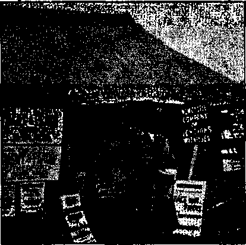
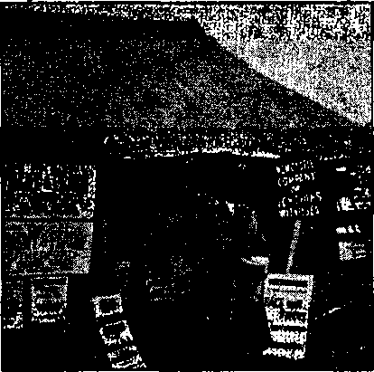

The New Government
Acting as Own Attorney—Blessed
Counsel by J. F. Rutherford
Human Immortality or Resurrection: Which? 17
Under the Totalitarian Flag
Unparalleled Regimentation Ahead
British Comment
Africa 31
Published every other Wednesday by WATCHTOWER BIBLE AND TRACT SOCIETY, INC. ' 117 Adams St., Brooklyn, N, Y., U. 0. A.
Editor Clayton J. Woodworth
Bualnaaa Manager Nathan H. Knorr
, Five Cents a Copy
fl a year in the United States $1.26 to Canada and all other countries
NOTICE TO SUBSCRIBERS
Remittances: For your own safety, remit by postal or express money order. When coin or currency is lost in the ordinary mails, there is no redress. Remittances from countries other than those named below may be made to the Brooklyn office, but only by Internationa! postal money order.
Receipt of a new or renewal subscription will be acknowledged only when requested. Notice Of Expiration Js sent with the Journal one month before subscription Expires. Please renew promptly to avoid loss of copies. Send change of address direct to us rather than to the ■ post office. Your request should reach us at least two weeks before the date of Issue with which it is to take effect. Send your old as well as the new address.'Copies will not be forwarded by the post office to your new address unless extra postage is provided by you, Published also In Afrikaans, Bohemian. Danish, Dutch, Finnish, French, German, Greek, Hungarian, Japanese, Norwegian, Polish, Portuguese, Spanish, Swedish, Ukrainian; also special Australian edition in English.
OFFICES FOR OTHER COUNTRIES
England 34 Craven Terrace, Dondcn, W. 2
Canada 40 Irwin Avenue, Toronto 5, Ontario Australia 1 Beresford Road, Strathfleld, N.S."W. South Africa 623 Boston House, Cape Town
Entered as second-class matter at Brooklyn, N. Y.( under the Act of March 3, 1879.
The TenderheartedStninMaMen
The firm had advertised for a stenographer. One ofthe partners Wb interviewing a very pretty girl who had applied for the position. The other partner came in, took a look at the girl, and called the other member of the firm aside and whispered: “I’d hire her.” “I have.” '
“Can she take dictation?”
“We’ll find that out later. I didn’t want any obstacles to crop up.”
In an Ugly Mood
He found his own front porch with wonderful accuracy, navigated the steps with precision, and discovered the, keyhole by instinct. Once in the dimly lit hall there was an ominous silence, followed by a tremendous crash.
“Why, whatever has happened, Henry?” came his wife’s voice from above.
“It’s all right, Mary, but I’ll—I’ll teach those goldfish to snap at me,” was the reply. —Labor.
No Need to Rush So
The American car was flying through the Warwickshire lanes, when it suddenly pulled up with a screech of brakes opposite a gate on which was leaning an old countryman.
“Say,” said the driver, “kin you tell me if I’m right for William Shakespeare’s home?”
“Yezzir,” he replied, “but there’s no need to hurry so—-he’s been dead some years!”
Carry On
"Get ready to die,” said the footpad, presenting his revolver. "I’m going to shoot you.”
“Why?” asked his victim.
"I’ve always said I’d shoot anyone who looked like me.”
“Do I look like you?”
"Yes.”
“Then shoot!”—Montreal Daily Star. ;
An Infallible Calculation
Jim; I can tell you how much water to the quart goes over Niagara Falls.
Joe: Betcha can’t. How much? ■
Jim: Two pints.—Kellygram,
The End
Blacksmith, to new assistant: “When I nod my head, hit it.” He did.
“And in His name shall the nations hope.”—Matthew 12:21, A. R.V.
Volume XXI Brooklyn, N. Y., Wednesday, May 1, 1940 ■ Number 538
Coughlin’s “Christian Front”
AT THE middle of January, 1940, Scotland Yard brought it to the .attention of the United States Government that the date set for “Reverend Father” Coughlin’s ‘‘Christian Front” to put into practice his “'Call to Action” was to be the 20th of that same month. As the plans included, among other things, the wrecking of printing plants, bombing of Brooklyn and Philadelphia navy yards, and of West Point and Annapolis, seizure of Federal Reserve banks, National Guard armories, railway terminals, key post offices and all utilities facilities, Uncle Sam was almost forced'to turn over in his sleep and arrest, not the tens of thousands involved, certainly not, but a few samples conveniently ready to hand.
An inducement to do something was furnished by th^ fact that fourteen congressmen were to be assassinated; and as congressmen do not like to be assassinated, it was almost necessary to stage some kind of act.
Scotland Yard has had recent experience that makes it more interested in things of this kind. In England the same gang calls itself, at present, the “United Christian League”, while in Canada its cognomen is “National Christian Party”. It is strong to work the word “Christian” into the title. It’s a big help.
There were seventeen men arrested, and three of these denied that they were members of Coughlin’s Christian Front, but the rest of them, and fittingly too, looked to him as their inspiration, their instructor, their friend.
Of the seventeen, one was a captain of the 166th Infantry of the New York National Guard, two were sergeants, one was a corporal, two were rank-and-file members, one was a. member of the United States Marine corps, one was an ex-cavalryman, and one wap an expert bomb-maker. A better cross-section of the gang that is getting ready for the big putsch could hardly have been selected.
This Is Coughlin’s Baby
Parents sometimes deny their offspring, and for a time Coughlin denied paternity of this outfit, but afterwards admitted it, with his usual evasions. It was he that first proposed the name, and the first cell or post of the Front was organized in the Church of the Paulist Fathers, Columbus Square, New York city, and used a post-office box of the Paulist Fathers as its mail address. A statement of one of the Paulist Fathers, made in New Brunswick, New Jersey, of the readiness of the Roman Catholic Church to kill anybody with whom they disagree has' often been published in these columns.
Hosts Batik Communism in New York
Units of Militant Christian Front Are Being Formed in Middlewest
CHRISTIAN FRONT CARRIES FIGHT INTO MORE STATES
uwy*n*r» I
■ he Sri-jm
.y- If you. were mentally pubescent ,e3’^O’ you would be disturbed that the ^’es committee, before and after SagRwr The seizure of the seventeen sam-pies, always indicated that it was “not interested in developing that, line of investigation”. Dies himself was reported to have been in with Coughlin on the silver racket and was, within two months of the arrests, principal speaker at a Madison Square rally which was attended by thousands of the Front and was advertised at their posts or lodges of companies as a “must’' event. Coughlin has urged Dies’ nomination for the presidency of the United States.
As early as 1936 Coughlin made the statement, “Democracy is doomed! I take the road to Fascism.”1 There was nothing irregular about this. The Roman Hierarchy is necessarily against democracy. Tn their eyes the people are nothing but serfs, to be bossed around by priests and higher officials. On the part of the public press 2 3 and most certainly on the part of the Hierarchy,a there has been a “conspiracy of silence” regarding the subversive activities of his Front. Even J, Edgar Hoover, who was responsible for the arrest of the seventeen, shies away from naming or arresting the man who put the young men in the hole where they now are. 4 5
end Father” Gregory A, I'eige, Jesuit, in an address at Williamstown, Massachusetts, reported in New York Times.
■* Fritz Kuhn, leader of the Nazi Bund, in his testimony before the, Committee, spoke of the close relations the Bund enjoyed with Father Coughlin. He was not asked to develop this line of testimony. Homer Martin admitted that lie had had a conference with Father Coughlin. He was not asked to develop this line of testimony. There was no further merftion of Father Coughlin in the hearings of the Committee. Is it because Chairman Hies does not consider Father Coughlin un-American? Then he docs not consider anti-Semitism ami Nazism un-American! Organizers of the Christian Front and the Christian Mohilizers have been arrested 1151 times for breaches of the peace and assault upon police officers and citizens in New York Cit jy alone, according to police records. Yet when the Dies Committee investigator was in New YTork, did he investigate Joseph McWilliams, Bernard D’Arcy, John Cassidy and other loaders of these movements? The answer of course, is NO.—Thomas L. Harris, in The Protestant Digest.
t The fact that Father Coughlin’s name is enthusiastically cheered at the meetings of the GermanAmerican Bund; the fact that invitations to the Christian Front meetings and to Bund meetings have been handed out by the same men at the same meetings; the fact that the Christian Front maintained picket lines at WMCA radio station every Sunday for a full year, bearing large placards on which was the picture, of Father Coughlin, has escaped the notice of investigators. Bast Sunday J. Edgar Hoover, head of the federal bureau of investigation, said he understood Father Coughlin had no connection with the Christian Front, although its followers sometimes used his name. 1 am afraid that Hoover should get around more. One might, for instance, get records of Father Coughlin’s speeches, or read copies of Social Justice. There was, for instance, that meeting in the Metropolitan. Opera house in Philadelphia July 14, 1939, in which Father Coughlin, speaking from Detroit by wire and amplifier, praised the achievements of John-Cassidy, commander of the Christian Front, urging the members of the audience to support and join that organization, and ending by conveying upon Cassidy the blessings of Almighty God. Cassidy is now under arrest with sixteen others, on the ground that they are implicated in a plot to spread- a general reign of terror. Hoover thinks there is no connection between Father Coughlin and the Christian Front in spite of the fact Father Coughlin’s paper, Social Justice, - conducted a Christian Front contest for months last year, offering prizes for the best answers to certain political, economic and social questions. It was a cute contest, because each answer was accompanied by 50 cents, and the right answer (prepared by Father Coughlin) got a prize. The proceeds of this educational lottery were to be used for the broadcasting funds with which to help finance Father Coughlin’s radio addresses to the nation. One question in
Jesuits Trained Cassidy
It should surprise no one to learn that John F. Cassidy,6 the leader of the seventeen sample Fronters, is a graduate of the Jesuit Fordham University, New York city. He has thus been perfectly trained in disloyalty to American institutions and in plans to take them over. The president of Fordham, “Reverend Father’-’ Robert I. Gannon, boasts that in the last three years that university received unsolicited gifts of $450,000. The wonder is that they were so small, when one realizes the forces that are backing Fascism in this country.
The Little Flower goes to seed
Cassidy is tendered the Fascist salute by his followers. He was an active member of “Reverend Father” Curran’s International Catholic Truth Society. There is a vast difference between Catholic truth and just ordinary, common, everyday truth. He was present when the first Christian Front was formed under the guidance of “Reverend Father” Edward Burke at the rectory of the Paulist Fathers in Manhattan. He is a forceful orator. He repeatedly shouted, “We have tried the pen, and now we must use the sword,” and urged the younger members to train for street fighting and “other things”,
this contest was: What is America’s strongest safeguard against Communism) The answer was, “A Christian Front.” In the issue of November 20, 1939, the question was asked, ‘‘What is Father Coughlin’s most emphatic advice to the Christian Front?” And the answer was, "Meet force with force as a last resort. ’ ’ Evidently the Christian Front boys think the time has some for the last resort. But Father Coughlin has nothing to do with it all! (Dorothy Thompson, Copyright, 1940, New York Tribune, Inc.)
s The names of some of Cassidy’s companions are Michael Joseph Bierne, Leroy Keegan, George Kelly, Frank Michael Malone, Alfred J. Quinlan, Michael Vill, and Edward Walsh.
Cassidy’s pal, Claus Gunther Ernecke (suicided April 11), he introduced as his “military director”. He is said to be of the Bund, and illegally in America. At a meeting in Philadelphia shortly before his arrest, this man, called “Bill” by Cassidy, boasted, “We have the guns and soon we will call on Philadelphia to join our ranks.”
Francis P. Moran,7 Boston unit, whose Christian Front meetings were addressed by Coughlin by piped-in telephone, made incitements to violence as frequently and openly as Cassidy or Ernecke. Coughlin’s paper “Social Justice” boasted that in Wore e s ter and Springfield* riflemen’s groups in units of 100 riflemen each were being organized. This boast was less than a month before the seventeen were arrested.
Cassidy’s spiritual adviser, “Reverend Father” Edward Lodge Curran, the “Reverend Father” Coughlin himself, and his adjutant the “R e v e r e n d” Cyril Keating, have furnished inflammatory oratory for the Fronts in many place s—
Boston, New York, Philadelphia, Minneapolis and elsewhere. To start a revolution in the United States takes a lot of work.
v The Daily News is kind, when it wishes to be, Knowing the church to which Cassidy, Bierne, Keegan, Kelly, Malone, Quinlan, Buckley, Walsh and others of The Christian Front belong, it was good of the Neius to designate as the reporters to write the story "down” Michael O'Brien and John McNulty. The gentlemen did as they were expected to do. Instead of acknowledging John F. Cassidy as the leader of the plot (under Coughlin) they wrote it that "Kennedy named Bishop as a ringleader in the group ’ That was nice of them, to cite Kennedy as their authority. The paper that published their story referred to the Boston leader, Francis P. Moran, as Francis P. Morgan. That was nice of them, to change 1 ‘ Moran” to "Morgan”. It helps to cover things up. In the story nothing was said about Coughlin’s encour-
Coughlin the Ringleader
In May and June, 1938, in his paper “So* cial Justice”, Coughlin urged his followers to ' organize platoons, gave them detailed instructions on how to proceed, and told the Christian Front groups by radio, “You and your group are directly affiliated to me,” Later in the year, “It is necessary for us to solidify and strengthen a virile, closely woven Christian Front.”
In July, just after his Front tried unsuccessfully to break up the assembly of Jehovah’s witnesses, in Madison Square Garden (June 25, 1939, at which convention Judge Rutherford was the speaker), Coughlin addressed 8,500 “enthusiastic crusaders” of the Front at Philadelphia. John Cassidy, head of the organization, was there and pointed out that units wore then in formation in several cities of 'the eastern seaboard, and when Coughlin had finished his address he said over the piped-in telephone wire, as his closing salutation, “And God bless Mr. Cassidy and the Christian Front.” Two weeks later he issued “a call to action”.
In less than six months Cassidy was in jail, when Coughlin promptly disowned him. But in a week he had received such assurances of noninterference and of support that he bucked up courage enough to “associate himself definitely with the Christian Front”. If a man is a natural liar he can lie both ways a week apart.
The appeal for action bore fruit. There were fifteen instances of theft of guns and ammunition from National Guard units and their concealment in Brooklyn hideopts. From the Rock Island Arsenal, largest U. S. Government supply base, there were stolen 4,115 percussion - caps, besides percussion fuses, mortar shells, and percussion primers.6
After Coughlin regained his nerve it came out that, his organizations had been formed in agement by radio, by telephone and by publication, of The Christian Front, or of the fact that less than a year before his imprisonment for conspiracy to overthrow the United States Government Cassidy was a speaker on the same platform with the “Reverend Father’1 Edward Lodge Curran, in Brooklyn. The News watches its steps closely. It could lie to high heaven about Judge Rutherford, but it is not going to get caught telling the truth about America’s Public Enemy No. 1, the Roman Catholic Hierarchy,-—not if it can help itself. It wants to stay in business. nearly all cities. His organization in Jersey City came to the relief of the seventeen by helping to raise money for bail, and in Brooklyn four thousand turned out for the same purpose. Now wateh these traitors become heroes in the eyes of the dirty press.
Who Wants Fascism?
Who wants the totalitarian state in the United States, which end these seventeen had in mind in their plot? It is now several years since Major General Smedley D. Butler announced that fourteen of America’s billionaires assured him that they had studied Mussolini’s methods, that he was making a go of it, and that they intended to set up the same system here. Myron C. Taylor, Roosevelt’s personal ambassador to the pope, is a great admirer of Mussolini, his system and the results he obtains.
Myron C. Taylor, born rich, had made $20,000,000 when he was but 50 years of age. His cut of 25 percent in the wages of the steel company employees at Gary, Indiana, was prior to the passing of the ordinance that steel workers and others who eat out of garbage cans in that city must be careful where they throw their scraps. They try to keep the streets of the city clean, as is proper in the largest city of the Steel Trust’s domains.
Taylor saw the pope and bowed three times going in and three times (deeply) on going out, after which he said he did not have any plans. That seems exCiting. Pacelli failed to “bless” him as he backed out, because he is not a Catholic, yet. ’
Fascist plans for America are in good shape. The grand knight of the Knights of Columbus told an audience at Detroit that the 450,000 members of his order are ready for whatever role may be assigned to them “in the event the United States is forced to protect its ideals”. Coughlin will tell them what to protect, maybe.
The Navy wants a share of the coming glory, and asked Congress to pass a bill empowering the president, under certain circumstances, to take possession of a factory. If that isn’t a dictatorship, what is it?
The Hierarchy’s scheme is to resurrect the ancient guild system in which masters and unless they have supplies for the machine guns previously stolen? The word “stolen” is probably too harsh a word. If the thing is honestly investigated it will probably be found that this was merely a ease of one inside Christian Fronter unlocking the door to another.
servants in each trade would be in One Big Union controlled by the bishops, and the man that did not turn Catholic would not be able to eat, because he would not be able to get a job.
The priests want theirs in this life and are illegally and with astonishing impudence operating gambling rackets (Bingo) in countless American cities, as Cincinnati, Indianapolis, Cleveland, Milwaukee, in defiance of all law'.
The bankers are so impressed with the weekly hauls of the religious crooks that their latest provision for them (in Denver) is that they may do all their banking business in little private rooms, built for their special use.
Hitler Showed the Way
In his book Mein Kampf Hitler showed everybody how to go about it to destroy a people’s government and inaugurate a totalitarian one. The book was not written in vain. It even showed the Hierarchy how to do it, and so, come 1940, “the Papal nuncio in Berlin was the first at the doors of the Fuehrer’s chancellery to extend to him the greetings and good wishes of the pope himself, and of the Catholic clergy.” And the bishops of Germany, in their pastoral letter to all the faithful, authoritatively declared:
In this decisive hour we admonish our Catholic soldiers to do their duty in obedience to the Fuehrer and be ready to sacrifice their-.whole individuality. We appeal to the Faithful to join in ardent prayers that Divine Providence may lead this war to blessed success.
The pope knows he could stop the war tomorrow if he would put Germany under an interdict, but this would mean shutting off his own revenues, and it would require honesty and courage. And the pope has none of these things.
There has been a deal said about neo-pagan-ism in Germany in recent years, but nothing is heard of it now, since the bishops have told all the neo-pagans that they can become Homepagans by merely signing on the dotted line.
The persecution stories received an awful setback when Sister Bogumila, back from a sojourn in a Polish convent on the outskirts of Warsaw, said, “I can’t exaggerate in saying how nice the German soldiers were to us.” She explained also that at the.time of the bombing of Warsaw Hitler came to the convent, and ascended the steeple of the adjoining church, so that he could gloat, with his own eyes, on the spectacle of thousands of his fellow men being murdered in a few minutes of time and the homes of their yvives and children destroyed.
Before and After the Arrests
Just before the arrest of the seventeen plotters against the American Government, and when the Fronters were feeling their oats the most, Raymond Etteldorf, in The Observer, Dubuque, Iowa, America’s only daily Catholic paper, showed what was in his mind, and what is in the mind of all the Fronters as the next step in the program to “Make America Catholic”. From the issue of January 11, 1940:
It seems that the universal conversion of America, if ever it comes before the last days, must come from universally concerted and organized efforts. And such efforts in the Catholic Church are best effected by a special religious order. Often in the history of the Church, when there was a great tusk to be done, it was accomplished by a religious order. In the middle ages, when the masses seemed to he losing contact with the Church, it was the Franciscan order that re-established this contact; when the Albigensian 0 heresy tore at the fibres of faith, it was the Dominican order that crushed the heresy; after Luther attempted a reformation that resulted in division of Christianity, it was the Jesuit order that accomplished a true reformation.
e “ Alhigexses, ... in the twelfth century in the south of France, distinguished by their zealous opposition to the Church of Rome.” Tn their beliefs “we find no vestiges of Dualism, nor any thing which indicates the least affinity with Oriental theories of emanation ’'. They had “unwavering belief in the corruption of the mediaeval Church, especially as governed by the Roman pontiffs”. “Innocent III enjoined upon all princes to expel them from their dominions in 1209,” “The heretics were handed over to the proselytizing zeal of the order of Dominicans, and the bloody tribunals of the-inquisition; and both used their utmost power to bring the recusant Albigenses to the stake, and also, by inflicting severe punishment on the penitent converts, to inspire dread of incurring the Church’s displeasure.” “It is likely, as has been remarked above, that many who held the simple truths of the Gospel, in opposition to the corruption of Rome, were included in the title by the Romish authorities.”
“With the exception of the charge of rejecting [ecclesiastical] marriage, no allegation is made against their morals by the better class of Roman writers. Their constancy in suffering excited the wonder of their opponents. * Till me, holy father,’ says Evervinus to St. Bernard, relating the martyrdom of three of these heretics, ’how is this? They entered to the stake and bore the torment of the fire, not only with patience, but with joy and gladness. I wish'your explanation, how these members of the devil could persist in their heresy with a courage ami constancy (Continued at fool of page S)
Six weeks alter these arrests, six of Jehovah’s witnesses in Montreal were sentenced to two months in prison “on charges of conspiring to distribute seditious libel”. Had they been distributing any of Coughlin’s inflammatory stuff? Oh, no. What had they been doing, then? Oh, just doing what the Cord told them to do, proclaiming The Theocracy as man’s only hope. But can men and women (some of these were women) be jailed on such accusations as this? Oh, no, not at all,—not legally: they are just plain Christians, not persons with a “Christian” Front. '
You can be sure that the seventeen arrested in Brooklyn, and° the tens of thousands that should have been arrested at the same time, will go seat-free. You will read slobbery stuff about their idealism, etc., etc., until you want to vomit. The same forces that set entirely free the “Reverend Father” Cox at Pittsburgh, and also set free his fellow crooks after they had confessed their shameful part in his disgraceful acts, will see to it that neither these men nor the man who incited them to their course will get anything out of this but a good advertisement. But you watch and see what Jehovah’s witnesses get for telling the truth. .
Don’t Worry About Coughlin
Of course, you already know that Coughlin was eaught redhanded in this Christian Front conspiracy; but don’t be worried about him. He is not worried about himself, nor is any other person connected with the biggest racket in the world. The Vatican crowd know that they have the politicians of the United States, from the president down, ready to step to one side and let them have their own way, and this applies to most of the judges, too.
Did anything happen to that Pittsburgh crook, Cox. who operated one of the worst swindles ever pulled off in the United States? Why, certainly not. Did anything happen to the Dougherty gang in Philadelphia for their conspiracy against Judge Rutherford? Why, scarcely tu be fuund in the mciHt religious of the faith of Christ? tf
The foregoing citations from McClintock & Strong^s .Encyclopedia regarding these faithful witnesses of the Lord should be supplemented by the fact that that bloodthirsty son of ihe Devil, Ambrose Hatti, in one of the latest statements he ever made [and he will never make another anywhere, for Isaiah 2$: 13,14 show's plainly that he is dead for ever], gloated over their destruction. certainly not. Will anything happen to Coughlin ? Most certainly not. The Hierarchy will take care of all that. Politicians do as they are told.
There is not a more unprincipled man in the world than the Jesuit-trained Goebbels, Hitler’s propaganda minister. Coughlin has repeated Goebbels’ stuff word for word, without changing a comma. Like Hitler himself, the two men received their training in the greatest lie factory, beneath the sun.
At the salesroom for Coughlin’s junk, at Royal Oak, Michigan, visitors are invited to enroll for tin; Radio League of the Little Flower, ivith the assurance that it is a “non-polit-ical organization”. This outfit took in about $1,000,000 from the public and invested $99,1.92.17 of that amount in the National Union for Social Justice, which is a political organization.
At the same lime that this horseeollared gent was denouncing stock trading on the radio as “gambling with other people’s money” he was trading in auto stocks.
While he was bemoaning the low price of silver, one of his female clerks was holding 500,000 ounces of the metal, and when Coughlin, with the alleged help of Dies (yes, the same Dies), had shoved the price up from 29e an ounce to 64.114 cents an ounce, you can guess how much Coughlin was really grieving over the sad lot of the 10,000,000 “starving unemployed” when he sold out.
About the Christian Front
Oh yes, a few kind words about Coughlin’s Christian Front. In his paper, Social Justice, May 23, 1938, telling the Fascists of America how to go about it to pull off the same kind of deal Hitler pulled off in Germany and B'ranco pulled off in Spain, be said:
Let your organization be composed of no more than 25 mem tiers. After a few contacts with these 25 persons you will observe that two of them may be capable of organizing 25 more. Invite these capable people to do that very thing.
Three weeks later he added to the foregoing instructions (issue of June 13, 1938) further details of how to get ready for the big putsch :
When the moment arrives, and not before that time, Father Coughlin will assemble all organizations whose leaders care to follow him.
The names of the various organizations affiliated with The Christian Front are a,11 known: The German-American Bund, The Christian Mobil izers, The American Patriots, The American Nationalists, The Citizen’s Pro
, CONSOLATION
teetive League, The German-American Business League, The Crusaders for Americanism, etc.
After advertising over the radio November 7, 1938,
I am hereby withdrawing from all radio activity in the best interests of all the people; I am doing this without attempting to offer one alibi, thereby proving that my promise is better than my bond, he was back on the air again early the following year and on July 30, 1939, had this to say for himself and his Christian Front buddies;
We will fight you in Franco’s way if necessary. Call this inflammatory if you will. It is inflammatory. Rest assured we will fight you and we will win.
Catholic Boys Believed Him
Because he has a fine radio voice, and is trained in all the standard tricks of demagoguery, and because he has the false social front that goes with the horsecollar, some thousands of Catholic boys believed him, took him at his word and organized a crazy conspiracy to seize the United States with a few old rifles, after the manner of Hitler’s gang in Germany. According to their advertisements only men could join, they must be over T8, they must have a military record, and the hookup was through Post Office Box fi9, Station G, New York City.
The movement grew rapidly. At the time of Judge Rutherford’s lecture in Madison Square Garden, June 25, 1939, the gang felt strong enough to undertake to bregk up a Christian assembly of 18,000 persons. They tried it and failed. Five weeks later, in Social Justice for July 31, 1939, Coughlin described the emergence of the “highly organized and rapidly growing militant Christian Front” and announced that a goal of 5,000,000 members by the fall of 1940 was the objective. In the same month, July, 1939, he harangued the Christian Front in Philadelphia, Pa., and “blessed” it (over the telephone). The chairman of that meeting was John F. Cassidy, one of the Catholic boys involved in the conspiracy against the Government. Cassidy may go behind bars (probably not), but the one that incited him will be punished, certainly NOT.
In the July 31,1939, issue of his paper (see cut on page 3) “Reverend Father” Coughlin carried screaming headlines “Christian Front Carries Fight Into More States”; and, in the August 7 issue of the same paper, said, “The place'for you, as a Christian, is on the Christian Front.” In The Commonweal (Catholic weekly journal) appeared the admission:
Father Coughlin, The Brooklyn 'Tablet, Social Justice and their many abettors and sympathizers must bear the direct responsibility for the plight of these 17 young men. For months The Tablet’s correspondence columns have been the free public forum for the national director of the group, John F. Cassidy. ’
After Cassidy and his friends wepc arrested, on January 14, 1940, Coughlin “roundly disavowed” the Christian Front members caught in the sedition and conspiracy net and expressed hope that the Department of Justice would “substantiate every statement made”. At this point he was interested in saving his own hide.
A week later, having regained his nerve, he again proved how perfectly not one thing he says can be believed, by reversing himself as follows:
I take my stand beside the Christian Fronters. Recognizing also that in one sense the opposition to Communism is on trial (??) I freely choose to bo identified as a friend of the accused. It matters not whether they he guilty or innocent; be they ardent followers of the principles of Christianity or the betrayers of them, my place is by their side until they are released or convicted.
Probably in the meantime Coughlin was tipped off that nothing would happen to him. Certainly not. Do you think the most ancient racket in the world is going to let one of their stooges down the way he w-as at first going to let Cassidy and the other boys down? You don’t know religion.
THERE is no telling how far the Rev. Father Coughlin may go, so just to play safe I am going to dig up my credentials as a Bishop of some church in Colorado, the name
of which escapes me at the moment, and protect my interests. I am just anticipating the day when it is established that everyone in this country must go to one church or another under the Coughlin system of government.
When people must go to church or go to jail a great mass of citizens who are now non-
9 * church-goers will be in the market for a nice, convenient church connection, and that is where my Bishop’s license will come in handy. In order to prove that they belong to a church and go to it people will have to possess church cards, and they will have to get them punched like a meal ticket or get a stamp every Sunday and possibly once or twice during the week.
I am not bothering my head about what Father Coughlin thinks would be a fair initiation fee into a legal American church or what he has in mind as weekly dues or assessments, but I will guarantee this: I will guarantee that nobody will undercut me, because I aim to have me a great big plant, short services and a system of fees, dues and assessments so small that they will defy competition.
In California the Ham ’n’ Eggs racket was a great success on a penny a day, but I am no pig for money, and I probably will be able to get the collection down to a penny a week in my place, and still do very well for Bishop Pegler by running a fast grind. My services will be only about three or four minutes— just long enough for my congregation to get their church cards punched or stamped, so that they can't be picked up by the Brown Shirts during the ensuing week and tossed into a concentration camp as atheists.
“In and out, fast and no waiting, and please' don’t block the aisles” will be the plan of my church, and they don’t have to wait for my sermons, because I will have them printed on dodgers and hung up on a spike at the door, and each customer can grab one as he goes out. They will be very good, sanitary sermons, too—all about the money-changers and international bankers and the value of gold—and nobody is ever going to stick me for heresy under the Coughlin system of government and compulsory religion, because I am going to plagiarize Father Coughlin’s own stuff, and nobody ever will be able to prove what it means, if anything.
I understand that the Rev. Father Coughlin favors the Franco way, and I am glad to say that this way is O.K. with the Right Rev. Bishop Pegler of some church in Colorado. I am not yet sure of the name of this'church, but I was appointed a bishop thereof several years ago, and I will fill in the blank when I find my diploma, which is somewhere around. Under the requirements of the Franco way, all marriages must be performed by religious authority, and it takes no genius to see what that will mean to Bishop Pegler when he gets his share of the seventy million unorganized Americans under the eeny-meeny or ibbety-bibbety system.
Say he gets only half a million of them and say there are about 100 other qualified clerics at present holding credentials in this Colorado church, for it is really a very small cult, Bishop Pegler wall get his cut of the marriage business at anywhere from $2 to whatever the traffic will bear, with time and a half for elopements after quitting time. He will get his regular grind for membership stamps on compulsory church cards. He will get collections to support his radio program, compulsory subscriptions to his church paper and compulsory funeral fees, and he can speculate in the silver market while raiding the market through propaganda. And he need never pay any attention to the income tax, because churches are immune under the law. And anyone who interferes with him will be a dirty atheist Communist, subject to arrest on sight and life imprisonment in a concentration’ camp.
You may quote Bishop Pegler as saying that if there is a fair division of the new business he will be 100 percent for the Franco way and an ardent supporter- of Father .Coughlin.' It gives Bishop Pegler a terrible start to think that he laughed when he unexpectedly received his appointment as bishop of that church in Colorado and was going to tear it up. It goes to show that you should never throw anything away.—Westbrook Pegler, in New York World-Telegram.
♦ The recent arrival of the liner Queen Elizabeth in New York recalls that the French liner Normandie, built at a cost of $50,000,000, also is laid up in the port of New York for the duration of the war. About 700 of the crew returned to France to join the army. The other 559 of the erew remain on board, but seem almost lost in the big ship, which now smells of mothballs from end to end.
Hard Question for Aged Poor
❖ Three million old-age pensioners in England find the increased living costs more than they ean meet. In a debate in the House of Commons a man in the gallery arose and yelled, “How can a man and his wife live on ten shillings [$2.50] a week for the two of us!” Attendants hustled him out.
The Graceful Deer, a Thing of Beauty ♦ The deer is one of the most graceful and beautiful of animals. While not all the different kinds are equally beautiful, each has its unique characteristics. There are fifty-two different species. The best-known classifications are the reindeer, red deer, the wapiti, the caribou, the elk, the moose, and the [by some not considered to be a true deer] muskdeer.
Deer are found in all parts of the world except Africa and Australia. Grass-land deer gather in herds, especially at the approach of winter. They feed on meadow herbage. Forest deer feed on leaves, buds and twigs. '
The deer may be said to be more useful to man than either the horse or the cow, but this is. true, of course, only of the domesticated deer, particularly the reindeer. But even the wild deer have proved to be highly useful, although that usefulness, unfortunately, is to be realized only w-hen the graceful creature has been slain. ■
The tame reindeer’s milk is used for food. A nutritious cheese may be made from it. Their meat is palatable, and they serve as beasts of burden both by carrying loads and by drawing sleds. The skin is utilized for footwear, clothing and bedding, and the antlers provide material for handles for implements and tools.
The deer’s antlers are easily the most interesting and outstanding thing about the animal. The creature gets new headgear every spring, and each spring there is something different about it. The sad thing about this is that in all species except the reindeer only the male gets the new headdress. The female literally has nothing to wear. The female reindeer, however, for reasons as fully known to her as to men, gets antlers as well as the male. She is the only female in the deer world so favored. By way of contrast,, the male muskdeer has no antlers, the only male in deerdom so discriminated against.
As spring approaches, the hairy skin with which the crown of the deer’s skull is covered becomes swollen. Gradually the antlers appear, at first soft and covered with skin. They are then said to be “in the velvet”. After a while the antlers harden, shedding the “velvet” or skin-covering. The budding horn formation grows with astounding speed. The antlers of a full-grown stag are produced in MAY 1, 1840 ten weeks. They remain until the following winter, when they are shed, to be replaced in the spring by another pair. Each successive pair of antlers differs from the set of the preceding year. The first year there is but the straight (fbeam”; the second year it has a single branch; the third year, two branches; and so on. However, the deer’s age cannot necessarily be told by the number of branches, as the addition of branches after five or more years is not always uniform. Sometimes, When the horn base is injured there may be a surprising number of branches on the antlers.
Seemingly the chief use the male deer makes of his horns is to fight his rivals for the possession of the female. Sanguinary battles are fought, often resulting in the death of one or both of the contestants. When the horns lock the result is usually fatal to both deer,
A deer with one point or branch on each antler is called a two-point (jeer ; one with two points on each antler, a four-point deer. In Scotland a twelve-point deer is a royal stag.
The size of a deer’s antlers are often prodigious. The giant stag of the Irish peat bogs sometimes attains to an antler-spread of from ten to, twelve feet, measured from tip to tip. These stags have palmated antlers or horns, like the moose; that is, their horns have broad, flat centers, like the palm of the hand. The entire rack of antlers, however, is shed after the breeding season, to be replaced by a new set before the next breeding season.
♦ The morning, some years ago, when the veterinarian came to give my cows the tuberculin test it so happened that three of them had broken out and were in a field of tall Iowa corn. This was told to the veterinarian, but he did not wait for them, as he was in a great hurry. A week later he denounced one of the cows as tubercular, but it was one of the cows that was a half mile away in the cornfield. When this was told to him, was his face red ? —Contributed.
♦ Farmers have to be quick to learn. The growers of perfume flowers in southern France have had to learn a new business. The synthetic chemists made it impossible for them to go on,
II
♦ Concord company of Jehovah’s witnesses decided to have their last information march and lecture in Antioch, Contra Costa county, California. Owing to the fact that it was to be our last and only march in this town, we wanted it. well advertised. Zone servant S. E. Johnson and company servant D. D. Rousch decided to put an advertisement in the local paper, which was done. City councilmen were seen and permission to use the city park for the lecture, ‘'Government and Peace,” was granted. Then the fireworks broke loose.
The editor, Walter B. Stafford, noting from the advertisement that the lecture was to be in the city park, became incensed and began to try to stop it. He saw all the city councilmen and each one gave an evasive answer and passed the buck to the other. No way. to stop the permit appeared; so out came the editorial in Thursday’s paper. For a master stroke of advertising at no cost, and by the Devil’s own crowd, now note the facts and be the judge.
The police were asked what they could do about it, but by now our company servant stepped in and ate all the varnish off the chief’s desk. They all received a witness. Records were played, each received a booklet Government and Peace, and all were invited to the lecture. They were informed that we were going to march and use the sound-ear. Objection to this was raised, but on being shown Liberty to Preach, and further witnessing, no more was said and they were left a little bewildered at being “walked over so roughly”. However, the ehief, Grover Donovan, sensing a possible disturbance, promised full police protection.
We imagine Friday night must have been a long one for them, as Saturday eame and still nothing appeared on the horizon that offered them a solution as to how to stop us. And march we did, to the complete dismay of the police, one of which wms heard to say, “If they 'would only take off those signs.”
Meanwhile word was sent to the Oakland company and a grand crowd of the witnesses turned out. Jehovah blessed us w’ith a beautiful, warm day and 3 p.m. found a crowd of about 150 gathered to hear “Government and Peace”. Chief Donovan, true to his promise, had his whole force out, including most of the boys from the fire department. They certainly patrolled the crowd well, giving those they were not familiar with a good looking over. Just before the company sound-ear started the lecture, a buck nun and about six husky young rowdies showed up and seated themselves near the edge of the crowd. They communicated with each other by a sort of sign language, done with their hands. They sized up the crowd and the police, decided there were too many, and when the lecture came to the point where the disturbance in Madison Square Garden started, they signaled each other with their hands, got up, and left. The lecture eame to an end with no disturbance.—Garland C. Hill.
♦ While witnessing to a man he invited me to go'to a church where he goes every Sunday and the preacher reads the Bible. He told me that the preacher preaches the same things that we preach. The church is located at Kingsland avenue and 104th street, Corona, and it’s a Methodist Italian church.
I left my bag of books in the ear and went inside the church together with this man, and we took seats ■while Mr. Rossi (the preacher) was preaching the Bible.. There were about 15 people in all. The preacher was saying that when a person dies he goes into the kingdom of God. When the sermon was over, the man introduced me to the preacher and I arranged an appointment with him to see him again.
Two days later I met him above the chapel, where he lives. I took along a bag of books and two Bibles, handed him one of the Bibles, and asked him if he could quote from the Scriptures about a dead person’s going into the kingdom of God. He began to tell me a different story; so I asked him to read Ecclesiastes 9; 5-10; and when he had done so he looked at me and said: “The Old Testament contradicts itself and the prophets differ in their testimonies with one another.” I wanted to make it easier for him; so I told him to read John 3:13. But the only tiling he could answer was about what Jesus had said to His disciples, that they would be with Him; or probably the preacher had in mind John 14:1-4. After that he said that the apostles consolation
Kingdom hall and publishers, Roseto, Pa.
of Christ were not educated in any school, since at that time there were no schools, and consequently they wrote what they could under the circumstances. ■
I told him that I was one of Jehovah’s witnesses and if he wanted to learn I could explain the Bible for him. He said that we are active but have the wrong ideas. The conclusion was that t left a Face. the Facts booklet with him, and with the result that a friend of the man that had introduced me to the preacher left the prison house (church) and regularly comes to an Italian model study of the Bible.—Tony Pietroforte, New York.
♦ I certainly agree that censorship of the radio is a dangerous thing. Few people have more decided views on things, more firm convictions of the errors or values of some of our organizations, than myself, yet I see no reason to deny anyone the right freely to criticize, explain, or even denounce that with which he disagrees.
Consider Coughlin. Here is a man whose church does not deny him freedom of speech —and no one can say our Catholic leaders are not conservative and patriotic to the State--so why should America bar him when the reli-MAY 1, 1840 gious leader of world religions does not bar or excommunicate? If millions want to hear him, why not? But we are on dangerous ground when we do not allow others to blow away the totalitarian smoke-screen and freely gaze on his motives and doctrines.
Consider also Huth erf ord—a man whom millions petitioned several times to hear. If he is wrong in his views, w-hy not have a 'Town meeting of the air” and hear his opponents and himself discuss the matter? And if he is right—well, then, no sane person would want to deny him full use of the air. These two men are as far apart as the poles in thought—-one is an avowed champion of religion and Fascism; the other ehampions Christianity as man’s only hope. Surely we are strong enough mentally in America to hear these men and decide for ourselves.
And who are these censors, anyway? When did we hear of them as outstanding leaders of thought, philosophy or Scripture, or government? And who gave them the right to take away our basic liberties ?
Let us have freedom of the air! When Christianity, religion and polities are taboo, then the mental life of the nation dies.—■ II. B. Hewitt, in Oakland (Calif.) Tribune.
13
Editor, Scioto Gazette.
Sir :
In an editorial in your paper of October 5 entitled “A Tough Problem" are statements at variance with truth. In fairness to those assailed in the editorial these statements should be corrected,
I have deposited $100 to be given to anyone proving that Judge Rutherford has ever printed or made any statement against any race intended to stir up racial hatred. The editorial says Rutherford’s disciples carried “obnoxious" banners. What was on these banners ? One read, “Fascism or Freedom, Which?” All know that Fascism curtails freedom. This banner condemns Fascism. Is exposing Fascism obnoxious to you?
Your editorial says we carried banners assailing “formalized religion”, I have Webster’s Dictionary before me. “Formalized” is defined as “having the outward form without the inward reality”. Is it wrong to condemn lip service and formalism which is based on the traditions of men and not on the Word of God?
Another banner read, “Religion is a Snare and Racket.” Certainly formalism and ceremonies based upon the traditions of men are just that. Christianity is observing and practicing the word of Almighty God.
Regarding the statement that these people shouted insults at certain religious groups is certainly not true. This undoubtedly is a reference to announcements made by sound-ears. I read these announcements and still have them in my possession, and not one religious group was named and absolutely nothing insulting was said.
“This is nasty business.” What do you mean ? The editorial with reference to Judge Rutherford and his associates is not based on facts. You say when people of this type are
 

Tent at Newcastle-on-.Tyne, England, used for advertising “Government and Peace”
given the convenience of broadcasting, the prospects are horrible. Why? Many of those men and women who carried' banners are residents of Chillicothe and known to be Godfearing people. Jehovah’s witnesses gladly observe every' law' not in violation of God’s law.
One more banner, the only one used not yet mentioned, was “Serve God and Christ, the King.” Is this one obnoxious to you ? or which one was ?
Would your Bible thought for the fifth of October, found immediately under this editorial, be appropriate here?—“Thy tongue deviseth mischiefs, like a sharp) razor, working deceitfully.”—Psalm 52 ; 2,
Yours for truth and the practice of Christianity,
Harold G. Campbell
(In the Scioto Gazette, Chillicothe, Ohio)
♦ On December 6, 1939, 1 was arrested while engaged in the witness work. At first taken to the police station and asked if released I would continue in the work, and replying in the affirmative, I w-as told I was under arrest on account of selling without a license, as per enclosed charge. When taken before the judge I pleaded “not guilty”, and my trial was set for 2 p.m. The city attorney inter-
Elizabeth Fuentes, lO-year-ohl faithful Trinidad, B.W.I., Jonadab, sleeps quietly till her Day of days shall come.
viewed me before the trial to persuade me to acknowledge guilty, but, of course, in vain. The prosecuting attorney, Russell Scott, put in the prosecution. When the prosecution finished I filed a motion to dismiss, which Judge King overruled. Then I made my own defense, not having an attorney. I followed the order of trial as outlined in Advice for Kingdom Publishers. When making my defense the judge stopped me, asking me not to deliver an oration, but allowed me to finish when I told him I would directly come to the point of the case. The judge did not render judgment today, but asked the prosecuting attorney to file a brief, and asked me to have one filed. Judge King took the book Salvation, and Attorney Russell Scott contributed 25 cents for another Salvation and Government and Peace. Everybody was happy and the friends all went home rejoicing to press the battle to the gate more than ever.—W. J. Drewelow', Pioneer, California.
(The subsequent history of this ease is most interesting. Drewelow filed a brief and his bail money was returned. The police officer who made the arrest in this case admitted privately that he had had private orders for six months to make this arrest in any way he could. These orders, it is certain, did not come from the chief of police, but from the religious racketeers, without reasonable doubt,—Ed.')
MAY 1, 1940
♦ Daines Stiles, a company, publisher, while going from door to door, Sunday, approached a man cutting his hedge and presented the literature and stated that the booklet would show the totalitarian menace to our own country. The man cutting the hedge said he did not believe such a thing could happen, as they had too good men at the head of this country. The witness went down the street and was soon confronted by a patrolman in a scout ear, who stated to him that he ivould have to go to headquarters so the chief could see what kind of literature he w-as distributing. The publisher got his wife and children, ivho were in the territory, and went to the station and told the officers assembled there that Ke wms one of Jehovah’s witnesses, preaching the gospel of the Kingdom, and that he was authorized to do this by the Watch Tower Bible & Tract Society, as evidenced by his testimony card, which he presented, and, further, that he had a legal right to preach in this manner, as evidenced by the Liberty to Preach booklet, which also w'as produced. The chief stated to the witness that he had a perfect right to do as he was doing, and told him to return, if he wished, to the field. The witness offered to play the phonograph for the officers; but they stated they did not have time, but accepted booklets, and the chief told his men to take the booklets, and literature was placed with all but the officer detaining the witness. This officer admitted that the person complaining against him was the man cutting the hedge. The witnesses returned to the same territory and found increased interest.
Wide-awake, Intelligent Teacher
♦ Word comes from Kansas that in one classroom the teacher is using Government and Peace as a textbook for the instruction of the children in the principles of true government.
A California scene—Using the record on “Baptism”
15
Comforting “Him That Hath No Helper” ♦ One of Jehovah’s witnesses tells the following touching tale of one of the Lord’s poor. The book accompanied the tale. Its covers were black with grime; the cloth had been worn through at top and bottom, both front and back, exposing the boards for a half inch. Every page was discolored, and on the designated page 84 there were lead-pencil marks enclosing the quotation “Trust in the Lord with all thine heart; and lean not unto thine own understanding. In all thy ways acknowledge him, and he shall direct thy paths.”
It makes one think of the narrative of Matthew 21: 28-32 and the Master’s words that society’s outcasts would go into the kingdom of heaven while the religionists would, unless truly repentant, get nothing at all:
A publisher of the Providence, R.I., company, while witnessing from house to house, met a woman who recognized the literature and told the publisher the following story:
One day last spring a bum called at her house and asked her for something to eat. She took him in and gave him food. Upon leaving he took out of his pocket this book Enemies and told her that this was the most wonderful book he had ever read. He said that he wanted to give it to her because she had been kind enough to give him something to eat, but that he had read it only twice and was now reading it for the third time. Therefore he requested her name and address so that he could send it to her when he finished it. She gave him the address, and after several weeks she received this book in the mail. So curious was this woman to know the contents of this book that had enraptured the man of misfortune that she sat down and read it.
This woman told the publisher that it was a wonderful book and she wanted a new one for herself. Not having use for this old one she gave it to the publisher. .
The condition of this book gives testimony of the hardships through which this man of good will must have gone; yet he took care of this book, as there is not a page in it torn. The corner of page 84 is the only one turned down, and on this page is the only scripture in the book that he marked and to which he must often have referred to give him strength to go on.
♦ They had read in the Little Rock Arkansas Gazette, the column entitled “From the People”. There the “hell-fire” question was and still is being discussed both pro and eon by the people. One writer suggested that all persons who were interested in the truth about this subject send 5c to the Watchtower Bible and Tract Society for the booklet Hereafter. They sent for this booklet, and when we received a good-will slip from the Watchtower a back-call was arranged. Results of first call: much interest and two Salvation books placed, one each for husband and wife. The wife, a stenographer, wanted to keep one at the office to read, while the husband, who was confined to bed, could have the other to read.
Baek-ealls were continued twice a week because of interest and hunger for the truth. And now a model study is being conducted. Both husband and wife have declared themselves on the side of Jehovah and His kingdom.
The wife and her mother, who is also for God’s kingdom, are now attending the meetings of the local company, and the husband would attend if not bedfast with tuberculosis.
Enclosed are their subscriptions for both The Watchtower and Consolation.
It is certainly evident that Jehovah is gathering the “great multitude”.—W. M. Manning, Arkansas.
♦ A man told me that when goats and sheep get in a fight the sheep whip the goats every time. To this 1 expressed my surprise. He said, “You know how a goat fears up. Well, the sheep wait until the goats are in that position, and then come at them in the middle and they are soon winded. A few sheep can whip quite a bunch of goats, and do it easily.”—Mattie A. Gillespie, Kansas.
[More or less to the point: In Pennsylvania a farmer, a small official, took umbrage at Kingdom News No. S, and drove two miles, with another man, looking for trouble with the four men out in the Kingdom work, one of whom had left this important message at his home- “Can Religion Save the World from Disaster?” He was talked out of his belligerent mood somewhat, but within a few days undertook the same language and the same tactics at the county seat of bis county, and got what he was looking for. It was not one of Jehovah’s witnesses that took him off his hind legs this time, but somebody else did the job and a neighbor had to carry him home in his ear. Tears, if any, should be shed at this point.
Also; In a New York subway a gentleman of the same religious persuasion, and the same fightloving nationality, landed on one of Jehovah’s witnesses and blacked his eye. But that was only the beginning of it. The young sheep happened to be muscular, quick and sober, and it was just too bad for the goat, who was mussed up much worse. Sorrow here, if necessary.—Nd.] ■
(To be continued')
THESE can’t both be true! “Resurrection” means to raise up again to life. If after death the human soul is in “purgatory” or in conscious torment in a hell of actual fire and brimstone, such soul must be alive, and therefore there could be no resurrection, for the reason that a live creature cannot be resurrected. The doctrine of “purgatory” or of conscious torment in hell after death makes void the infallible Word of the Creator concerning the resurrection of the dead. The sacrificial death and resurrection of Jesus Christ is a guarantee that all the dead in the graves shall be raised up again. Concerning this Jesus said: “Marvel not at this: for the hour cometh, in which all that are in the tombs shall hear his voice, and shall come forth; they that have done good, unto the resurrection of life; and they that have done evil, unto the resurrection of judgment.” (John 5:28,29, Am. Rev. Ver.) Had any souls been in “purgatory” Jesus would have said so.
To support their tradition that the dead are conscious in either heaven or “purgatory” or hell, the religious clergy must find that man has an immortal soul. “Immortality” applies to that which cannot die. It is easy to see that no creature or soul could be for ever in hell torment or in “purgatory” or in heaven if that creature could and would be killed. Therefore the demon master mind behind these false doctrines said: ‘We must teach that the man has an immortal soul.’ If the proof in the Bible is that man is a mortal soul, subject to death, then the “purgatory” and “torment” theories must be completely false.
When God made the perfect man and placed him in the paradise of Eden God said to him: ‘In the day that you sin you shall surely die.’ That was the plain statement of God’s law. (See Genesis 2:17.) Did God mean that only the body should die? His own answer, at Ezekiel 18:4,20, is: “The soul that sinneth, the same shall die.” (Catholic Douay Version) The only support for the tradition
MAY 1, 1940
of human immortality is what the Devil said to Eve in Eden. God stated: “In the day that thou eatest thereof [disobediently] thou shalt surely die.” The Devil contradicted and stated: “Ye shall not surely die.” (Genesis 3:4) Whom shall we believe, God or the Devil ? The religious clergy have accepted the Devil’s statement and rejected God’s, and henee they teach the immortality of all souls.
The Devil himself is not immortal, because the Scriptures, at Hebrews 2:14 and Ezekiel 28:18,19, show that Almighty God will destroy him in due time. So ask the clergymen this question: If “hell” is a place of eternal torment, and if the Devil is the chief fireman, who is going to keep up the fire when he is destroyed ?
In the King James Bible, or Authorized Version Bible, the word “immortality” occurs only five times, and the word “immortal” only once, and the word “incorruption” only four times. At Romans 2:7a spirit-begotten Christian is admonished to seek immortality, or ineorruption. A man does not seek that which he already possesses, hence does not possess immortality. jGod alone possesses the quality of immortality; as it is written; “Who only hath immortality, dwelling in the light which no man can approach unto; whom no man hath seen, nor can see: to whom be honour and power everlasting.” (1 Timothy 6:16) Hence when Jesus was on the earth as a man He was not immortal, but God gave Him immortality at His resurrection as a reward for Jesus’ faithfulness even unto death. (John 5:26; Revelation 1:18) The faithful overcoming Christians are promised immortality as a glorious reward at their resurrection from the dead at Christ’s return and the establishment of His Theocratic kingdom. The promise to them is: “The dead shall be raised incorruptible, and we shall be changed. For this corruptible must put on incorruption, and this mortal must put on immortality. So when this corruptible shall have put on incorruption, and this mortal shall have put on immortality, then shall be brought to pass the saying that is written, Death is swallowed up in victory.” (1 Corinthians 15:52-54) It would be inconsistent for the Lord to have put that into His Word if man were already immortal. Now, these scriptures show that man is a soul (Genesis 2: 7; 1 Corinthians 15:45) ; that he is subject to death as a soul (Ezekiel 18:4; Matthew 10: 2.8); and that he is therefore not immortal (Job 4:17); and these
17 things being true, it must follow that a man, when he dies, could not go to “purgatory" or “eternal torment" or immediately to heaven. If the dead are to live again, it follows that they are now dead, and not alive anywhere. The resurrection of the dead is so plainly taught in the Bible that there can be no doubt about it.
It is the privilege of those who understand the Bible to comfort others who desire consolation. The Scriptures use the word “sleep” to describe the death state of those in the graves, because sleep denotes a state of unconsciousness from which there is an awakening. lienee it is written, at 1 Thessalonians 4:13,14,17: “But I would not have you to be ignorant, brethren, concerning them which are asleep, that ye sorrow not, even as others which have no hope. For if we believe that Jesus died and rose again, even so them also which sleep in Jesus will God bring with him."
As stated in Psalm 16:10 and Acts 2: 27-34, Jesus died and went to “hell", that is, the grave. The third day after death God raised Jesus up out of that condition. He was the first one resurrected from the dead. His resurrection is complete proof of the resurrection of the dead in the graves at His coming and kingdom. To meet the argument of those who in the days of the apostles denied the resurrection of the dead, these words appear at 1 Corinthians 15; 12-18, 20-22: “Now if Christ be preached that he rose from the dead, how say some among you that there is no resurrection of the dead? But if there be no resurrection of the dead, then is Christ not risen. And if Christ be not risen, then is our preaching vain, and your faith is also vain, Yea, and we are found false witnesses of God; because we have testified of God that he raised up Christ: whom he raised not up, if so be that the dead rise not. For if the dead rise not, then is not Christ raised; and if Christ be not raised, your faith is vain; ye are yet in your sins. Then they also which are fallen asleep in Christ are perished. But now is Christ risen from the dead, and became the firstfruits of them that slept. For since by man [Adam] came death, by man [Christ Jesus] came also the resurrection of the dead.”
Christ Jesus was the first one to be resurrected from the dead. Prior to that Lazarus the friend of Jesus was awakened out of death by Jesus for the very purpose of illustrating the manner of the resurrection during His reign. Lazarus afterwards died and in due time will be completely resurrected on condition of obedience. In further proof that Jesus was the first resurrected, it is written, in Colossians 1:18: “He is . . . the firstborn from the dead; that in all things he might have the preeminence.” (See also 1 Corinthians 15:20.) But on this point many make inquiry concerning what is reported to have taken place at Jesus’ death on the tree, as described at Matthew 27:51-53, to wit : “And the earth did quake, and the rocks rent; and tire graves were opened; and many bodies of the saints which slept, arose, and eame out of the graves after his resurrection, and went into the holy city, and appeared unto many.” The oldest Bible manuscript, to wit, the Sina-itie MS., omits some words above and reads: “And the earth did quake, and the rocks rent; and many bodies of the saints which slept arose, and came out of the graves after his resurrection, into the holy city, and appeared unto many.” The record seems to imply that the earthquake at the time of the Lord’s death opened these graves, produced the awakening mentioned; but that the awakened ones tarried and did not manifest themselves in the city of Jerusalem until after the Lord’s resurrection. At very most it was an awakening similar to that which Lazarus experienced, and the daughter of Jai r us, and the son of the widow of Na in, to die again, later on. We may be sure of this because the express declaration of 1 Corinthians 15:20 is: “Christ is risen from the dead and become the firstfruits of them that slept”; the first one lifted completely out of death to perfection of life, the first one resurrected to perfection of existence. The persons mentioned at Matthew 27: 52,,53 could, have been no more than merely aroused from the slumber of death temporarily, and for some purpose of which we have no present knowledge, Matthew’s record, however, may not be describing actual events back there, but may be prophetic of events at the second coming of the Lord Jesus Christ in the glory and power of the Theocratic Kingdom.
To know that those now dead in the graves will be awakened and brought back brings hope and consolation to those who mourn the loss of their beloved. Those awakened to life on earth and proving obedient and faithful will inhabit the earth in perfection under the heavenly Theocratic Government. No one could know this without having proof from a reliable source. The Bible contains that proof.
The Portuguese island of Madeira is famous for its woodland and garden beauty. Anyone cutting down a tree is required by law to plant another in its place. Though one of the smallest countries in Europe, Portugal has a colonial empire of nearly 10,000,000 inhabitants; This empire includes three large territories in Africa, four groups of islands in the Atlantic, two portions of India, half the island of Timor, in the East Indies, and the city of Macao, near Hong Kong. Angola and Mozambique, in Africa, have long been coveted by Germany. This may be a reason for Portugal’s courting the favors of the Fascist powers, for she is far too weak to put up any resistance should her empire be attacked.— James S. Williams, Lithuania.
Machine-gunning Spanish Refugees ♦ Anything might be expected of the butcher that at Badajoz caused the killing not only of the aged but of boys and girls as young as 12 or 13. Hence it is no surprise to learn that as the last of the refugees fled out of Puig-cerda into France the planes of Franco-the-Damned machine-gunned the refugees, murdering or wounding a final 1,000. Small wonder that Madrid held out so long, when the people knew in advance what was to be their fate.
♦ G. M. Huddar, Nagpur, India, soldier in the International Anti-Fascist Brigade, a prisoner in "Rebel” Spain for more than six months of 1938, states that he was often transferred from place to place. The prisons were churches and convents (showing that convent bars have their uses) and were also used for storing the arms and ammunition shipped into the country from Italy-
♦ Trouble ahead for France is plainly indicated by the construction lately under way of eleven new airdromes along the Spanish frontier, and the unloading of cargo after cargo of tanks, machine guns, rifles, airplane engines and spare parts, with artillery of all calibers, in the harbor of Rios, Spain. All this work was under German direction and control.
♦ During the two and one-half years in which Madrid stood steadfast for the Spanish Republic, it had at all times 40,000 male spies and saboteurs and 10,000 women working against the Republican cause. When the eity ■ finally surrendered, after one of the most prolonged and hard-fought sieges of history, 6,500 food trucks were sent into the city, laden with all kinds of good things. It was a shrewd political trick, and it worked. Previously the Madrilenians had full heads and empty stomachs, but after the arrival of the food there were empty heads and full stomachs. Such is man. Six thousand Madrilenians were jailed as criminals, to be tried by military tribunals.
♦ It is significant that every dictator relies upon reduction of educatipn to retain his job. The present dictator of Portugal, Premier Oliveira Salazar, has said in so many words that his aim is to reduce education so that they will not be able to read the newspapers and thus be made unhappy by a knowledge of the evil things going on in the world. To that end he is restricting admission to schools, discontinuing educational lectures in Lisbon, and cutting educational outlays to the bone.
♦ General Franco, on the occasion of his triumph at Madrid, participated in several heathen ceremonies. His bodyguard consisted of Moors in white turbans, red capes, blue coats and white trousers. He mounted the steps to the heathen temple under a white silk Canopy carried by six heathen priests, and handed his sword to the heathen cardinal Goma y Tomas before the altar of the so-called “Christ” of Lepanto—one of the demons.
♦ The offense? of being a law-abiding patriot, with a fair chance of being murdered for it, was defined by Judas Iscariot Franco as “putting obstacles in the path of the providential and inevitable triumph of the national movement”. The providential part came in that the Papacy supplied the financial strength and its sons Mussolini and Hitler provided the soldiers.
MAY 1, 1940
19
♦ Totalitarian dictatorship has evolved a new pattern of methods and techniques, Behind a mask of plebiscites, popular elections, and occasional assemblings of a so-called ‘"parliament’1—which listens and applauds but doesn't really parley—the government actually functions through and, with a single political party which comprises a minority, usually .a small minority, of the nation, but which is more or less hand-picked, severely disciplined, and equipped with a monopoly of the means of influencing public opinion and enforcing the will of the dictator. The party permeates and ultimately dominates the army, the courts, the ubiquitous seertet police, the schools and universities, the newspapers, radios, and cinemas, the telegraphs and telephones, the pulpits and rostrums, the youth organizations, indeed all organizations, whether economic, social, or cultural. And a Russian Tsar, a Louis XIV or an Alexander the Great might well envy the speed and effectiveness with which dissenters are liquidated, doubters purged, and suspects gathered into concentration camps.
Still another novelty of totalitarianism is its exalting of might and force, not only as means to an end—there is precedent aplenty in Western history for that—but as an end in itself. In earlier and less totalitarian days, a despot who got rid of a foe or appropriated some neighbor’s land went to considerable trouble, as a rule, to justify his action on conventional moral grounds. Now the totalitarian despot is hardly expected to offer any explanation at all, and when he does, it bears no trace of the Decalogue or the Sermon on the Mount. It suffices to echo the more up7to-date Nietzschean and pseudo-Darwinian principles that patience is a vice and that progress depends on a struggle for existence and Lebensraum for the fittest. Or it may suffice to recite the Marxian creed that proletarians have to fight for what they get and they are always right. The fact remains that brute force is boastfully invoked alike in the internal affairs and foreign policies of the totalitarian state. Force against Jews and Christians’ Force against domestic critics! Force against Czechs and Albanians, Poles and Finns! The exalting of force and terrorism does not signify merely the immoral doctrine that, the end justifies the means. It signifies an utter denial of any moral law superior to the might of dictators. —Carlton J. H. Hayes, professor of history, Columbia University.
♦ Always, when you read in the newspapers of attacks upon Jehovah’s witnesses, you will find the report of the attack is given by one or more priests, which is a dead give-away as to who are the real offenders. When the witnesses were assaulted with tomatoes, eggs and grapefruit, at .Detroit the Associated Press meticulously reported the event, giving the explanations of “Reverend Father” J. J. Britz and “Reverend Father” E. A. Smith, of the Holy Redeemer church, as to how the assaults occurred. The sound-car was wrecked. Bricks and sticks were thrown; also stories. The two dominies were present at the riot. You can guess why they went. A police sergeant was hit with a brick in the neck. When Jehovah’s witnesses sought, to get a warrant for the arrest of John Hearn (history teacher and coach at the so-called “Holy Redeemer School”) for leading the riot, the assistant prosecutor refused to issue a warrant, and let the rioters and destroyers of property off with what the ' papers report as a “warning” of tfboth sides against further disturbance”. A fine sample of “justice” led around by the nose by Roman Catholic gangsters.
♦ Joseph Scott, Knight of Columbus, president of the Los Angeles community chest and the board of education, five times president of the Los Angel its chamber of commerce, and one-time nominator of Herbert Hoover for president, has it all figured out. He says:
No nation can be truly great, no people can be free, prosperous and happy without religion. [Seattle Posl-Inirtlliyewcer]
Now take, for instance, China. The reason China is so truly great, free, prosperous and happy is because she has so much religion. India the same. Scott did not say anything about what would happen to a country that lias Christianity instead of its opposite, which is religion.
SOn page 48 of his book The Catholic Crisis the courageous independent writer, George Seldes, gives the following summary of recent achievements of the Boman Catholic Hierarchy in the United States. He also points out that the pope now obtains 90 percent of his international income from onesixth of the people of the United States. This, of course, would not be possible except for the unmitigated gall and the beautiful and sublime nerve of the engineers of the world’s greatest racket:
1. Intimidated and terrorized the entire United States press on the Spanish issue.
2. Denied the constitutional right of free speech to other minorities.
3. Nullified the wishes of the American majority through pressure on Congress on the Spanish and other problems.
4. Censored the movies of the nation from the Catholic viewpoint.
5. Suppressed books and other publications, some for moral reasons, others for sectarian reasons,
6. Boycotted, threatened boycotts, or ruined the business of certain persons favoring loyalist Spain.
7. Forced their minority view on child labor legislation through New York and other legislatures.
8. Intimidated the owners of various radio stations on moral and controversial and political subjects.
9. Threatened violence to liberals and radicals in certain cities.
10. Built up Fascist political machines and gangs, as in Jersey City.
11. Defeated, or helped to defeat, numerous city, state, and national measures of a reformist or liberal tendency; helped maintain or inaugurated legislation of an anti-liberal, anti-labor, antiprogressive, or reactionary nature at various times.
12. Permitted spokesmen to spread anti-Semitism, hatred, prejudice, and a part of its press to do likewise.
13. Interfered with the purchase of books in public libraries, attempting to eliminate liberal books; also intimidated bookshops selling books Catholies think immoral.
14. Made “determined and incessant efforts to embroil the United States with Mexico” . . . contributions “to attempted counter-revolutions.”
15. Instigated raids on birth control lectures, clinics, bookshops.
16. Made decent changes in our marriage anc) divorce laws impossible.
17. Indulged in unadulterated Red-baiting side by side and often in eo-operation with America’s No. 1 Fascist, W, R. Hearst.
MAY 1, 1940
18. Generally allied themselves with non-Catho-lie reactionary pressure groups which have menaced the liberties of the majority.
♦ The London Catholic Universe tells about Christmas in the trenches in France in 1914 and about how “the spirit of the Christ Child intervened” and the British and German soldiers climbed out of their trenches, traded cigarettes for sausage and swapped plum pudding for drinks; how they danced and sang together in “the holy silence that had come upon the fields of war” and “Christ had shown His power over the hearts and minds of men”, etc., etc., ad nauseam. The article did not mention that the next day, with the advice and encouragement of their chaplains, they returned to the holy business of blowing one another’s entrails into smithereens and the Christ Child was in the hospital with both arms and both legs gone and his lower jaw shot away and his eyes blown out. The Universe is simply plying its age-long trade of hypocrisy and trying to make out what a beautiful thing the Devil’s civilization really is, after all.
♦ The Holy Inquisition continues in Spain. Franco’s statement, before his victory, that 'nobody wants the damned eternal Jews because they are a Communist horde’ is now bearing the same fruit as in Germany. As late as November, 1939, thousands of Loyalists were still being killed every night in the concentration camps. The famous gold tabernacle is back in the cathedral at Toledo, which shows, plainly enough, that the Republicans never destroyed the church treasures. Religious processions are again the rule. A million political prisoners are still in jail. Those onee most active in fighting for liberty are put to death. Two Basque priests who had been sentenced to death are to have thirty years in prison instead. Spain is right back where it was, but is having a hard time to explain to the people how it is that their recent savior, Hitler, is now in cahoots with Stalin, the Bolshevik.
♦ The pope “blessed” the world (of the Devil) on December 8, 1939, and ever since then things have gone from very bad to very much worse, as was to be expected.
21
It seems that the racketeers are homing in on each other’s territory occasionally now; must be the pickings are poor.
A couple of nuns stopped at the door last Sunday and said they were collecting funds for the local St. Joseph’s orphanage. Well, you know that orphanage idea has always gone well around this town, since they take care of a large group of boys over there. Thought it was strange that they were asking for money, since our local community chest hands out a pretty fair portion of its receipts to them each year and it is understood that - they are not to do any begging if they get their cut. I gave them what I had in change (thirteen cents) and from now on I shall no doubt be superstitious. Here follows the locaJ news clipping:
NUNS’ SOLICITING HERE DENOUNCED
Nuns representing a European order who are reported to be soliciting funds in Jackson a™ unauthorized to do so, declared the Rev. Father Eugene Cullinane, pastor of St. Mary’s parish and dean of the Lansing diocese, Wednesday.
Before soliciting for funds by any Catholic order outside of its diocese can be started, a permit must be obtained from the bishop who in turn notifies the pastors of the various parishes, Fr. Cullinane explained.
The Felieian Sisters of St. Joseph’s home also stated that they had no connection with the nuns who are seeking charitable contributions in Jackson.
Papa Cullinane ought to know better than to squeal on the poor gals that way, since he of a certainty knows that they only lie and steal that way when they are told to by his brother “Papas”. Who knows, perhaps he will want some of his little gals to do some dirty work for him sometime ? and I’ll bet he would be hopping mad if some other Papa squealed on him.
I am neither a Catholic, Protestant, Jew nor Jehovah’s witness, but you have got the church racketeers sized up dead to the right, I think.—G. Reynolds, Michigan.
♦ In Germany, Poland and England Roman Catholic priests and students in Catholic seminaries are exempted from military duty; in Belgium they are trained to be stretcherbearers, In France there are no exemptions; bishops and priests are considered the same as other men; all are liable for military duty.
♦ At a public address in Vatican City the pope said to 2,000 pilgrims:
When you return home, say that you have seen a father dressed in white who loves you and who beseeches the favors of heaven for the whole world.
It is nice to know that in a world where there is so much cussedness the pope finds something that he can admire, even if it is nothing more than his white togs that he puts on for company. By the way, on this subject of men wearing skirts, there is something worth noting in the following:
Why trimmest thou thy way to seek lovef therefore hast thou also taught the wicked ones thy ways. Also in thy skirts is found the blood of the souls of the poor innocents: I have not found it by secret search, but upon all these. Yet thou gayest, Because I am innocent, surely His anger shall turn from me: behold, I will plead with thee, because thou sayest, I have not sinned.—Jeremiah 2:33-35.
Cockeyed Americans
♦ A few years ago there were certain papers that tried to move heaven and earth to prevent Judge Rutherford from speaking over the radio, and they are still of the same mind. But those very same papers come out and demand that Father Coughlin be allowed to speak his piece over the radio, because, forsooth, this land is the land of free speech. How strange that they never thought of that when they were fighting against Judge Rutherford’s rights! The papers in question, among many others, that have thus tried to walk on both sides of the free speech fence at one and the same time, and which, of course, cannot be done at all by any honest person or any honest paper, are the St. Louis Catholic Herald, the Albany Evangelist, the Baltimore Catholic Review, America, and the Milwaukee Herald Citizen..
♦ “Let’s imitate Rutherford” is the headline of a long editorial in the Michigan Catholic, urging Catholics to get out and take the Catholic literature from door to door. Never fear; it will not be done. The only consideration that would induce anybody to take the literature from door to door is love of God and love of man, real devotion, real consecration, and this the Hierarchy can neither buy nor develop. Only the truth in a man’s heart makes him willing to accept what every door-to-door worker must anticipate and will receive.
y vgg Archbishop Joseph Schrembs, of Cleveland, whose paper. Ths Catholic Universe, distinguished itself by calling Judge Rutherford 78 vile names, at the time of the Catholic Hierarchy's conspiracy to prevent him from telling the message of God’s Kingdom over the radio, has distinguished himself some more. In a cable to the pope, referring to Roosevelt’s sending his ambassador to the Vatican, Schrembs said, “This is a triumph for Your Holiness the like of which has been reserved only for the greatest of the Roman pontiffs.”
Pay $10 and Avoid Cooking
♦ Almost anybody, if he had $10 to spare, would be willing to let go of it rather than cook forever, “utterly unaided and forgotten after death,” If you have saved up $10 for a new suit or a dress, or tires for the old jaloppy, or shoes for the youngsters, you can get rid of the $10 and learn what a perfect jackass you were by writing to the Society of the Divine Savior, Salvatorian Seminary, St. Na-zianz, Wisconsin, and ask them for the lowdown on the “Mass Association membership for you and your family”. It is a beautiful piece of printing and it has the Imprimatur Paulus Petrus, Epps. Sinus Viridis, Sinus Viridi Aug. 11, 1922. That ought to be worth something, say a couple of cents. So all you will lose will be $9.98. You absolutely get nothing unless you send the $10, and nothing if you do. That’s fair; isn’t it? ’
♦ Poland was almost solidly Catholic, and the “Church” had so much influence with the clique that ran the country that they could get anything they wanted. When Russia took over the eastern half of the country the Hierarchy found the going somewhat harder. The Catholic Tinies whined:
In many villages the Soviet authorities are levying exorbitant taxes “for the maintenance of the church” with the obvious aim of alienating the peasantry from the parish priests by making the latter to appear “an expensive luxury” in the eyes of the people. ,
They were always that, anyway. What the Bolsheviks have probably been doing is to publish the facts so that the peasantry can see for themselves how they have been robbed by the religious gangsters who are over them.
MAY 1, 1940
♦ The Scripture statement that “Christ dieth no more” (Romans 6:9) ought to be enough for any man; but it is not enough for the Devil. He wants to make it clear that Christ is being continually put to death, by priests who receive a monetary consideration therefor. This is strikingly brought out in the headlines of an article in the London Catholic Tieraid, which headlines read, “Mass is not a prayer meeting, a communion service, but a sacrifice.” The object of this false teaching is to make the priest superior to Almighty God. Indeed it is the claim of Catholic theologians that any Catholic priest, at any time he chooses, can command Almighty God to come down and be sacrificed afresh and He will have to come.
♦ Vatican City, Dec. 5.—Pope Pius XII has returned a courteous refusal to a British suggestion that the Holy See join an anti-Communist front, it was understood today.
Reliable quarters said the pope replied, through Msgr. William Godfrey, apostolic delegate to London, that though he had long encouraged the world’s Catholics to struggle against the spread of Communism, the Vatican could not associate itself with any combination of powers for purely political purposes.
The British proposal, it was learned, called for the formation of a bloc of powers, such as the British Empire, France, Spain, the United States and other nations wishing to halt Communist expansion.—Cincinnati (Ohio) Post.
♦ In accord with the Vatican demand that the truth must be suppressed, the government of Hungary issued an order December 13, 1939, suppressing the work of Jehovah's witnesses in that land. The dispatch which contained this information stated in one sentence that these witnesses are largely drawn from the most destitute classes in Hungary and, in the very next sentence, that the Roman Catholic primate of Hungary, Cardinal Seredi, “condemned the modern atheistic trend.” The Roman Catholic Hierarchy is rolling in wealth, considers itself god, and thinks that any people denouncing its ungodly racket is atheistic, Communistic and all the other “istics” it knows how to pronounce.
Priests in France and perhaps some other countries must be common skiers the same as other men, and must thus participate in such acts ®^"as disemboweling their fellows when occasion arises. The pope recently urged all priests under arms to fulfill their duties in an exemplary manner. They were to do what they could to “draw souls to salvation". It would be hard for a man who had somebody’s bayonet in his abdomen to feel particularly drawn toward the man who put it there, but the pope did not specially mention this exercise in his apostolic exhortation.
♦ A dispatch from Rome, sent out by the United Press, referred to the condition of the pope’s health and on authority of “yatiean sources” said of the pope that “his severe penance, including fasting, for atonement of the world’s ills, also contributed to his condition”. James said “The friendship of the world is enmity with God” (James 4:4), and Paul said of Satan that “the god of this world [meaning thereby the Devil] hath blinded the minds of them which believe not”. The real God, the God of the Bible, would not receive with favor anything that the pope would do.
♦ Miss Catherine Grosspietsch, of Milwaukee, is mad, and you cannot blame her. All her life, for she is a Catholic, she has been seeing archbishops and monsignors and things like that, and so when she got big enough to make paintings she tried to illustrate these, what she calls “soldiers of the soul”. She made a hit all right, but she made the paunches too big, albeit unintentionally, and she and other artists were sore when her picture was forced out of an art exhibition because her “soldiers” looked too porky to run. They eould only roll.
Pope “Blesses” Mussolini
♦ The pope officially “blessed” Mussolini. The dispatches do not indicate that he said anything about II Duce’s achievements in destroying the native population of Libya, butchering the natives of Ethiopia, betraying the Spanish'Republic, grabbing Albania, or participating in the infamies that led to the dissolution of Czechoslovakia, but he just “blessed” him on the general principles that actuate both men. It is well.
♦ All drivers of Ford cars may now rejoice in the practical certainty that the bulk of Henry’s billions will go to the Roman Catholic Hierarchy, to spend as they see fit. The key to the situation lies in the fact that his favorite grandson, Henry Ford II, is receiving instruction from “Reverend Father” Sheen in the Roman' Catholic religion and he is expecting to marry Miss Alice McDonnell, whose church does not need to be guessed.
♦ After Roosevelt sent his personal ambassador to the pope it took almost four months to have Washington made into a separate archdiocese. This is a little slow, in view of the pope’s urgent desire to get control of all governments at the earliest possible moment, but it will have to do, under all the circumstances.
♦ Not . only did Roosevelt obey the Roman Hierarchy’s wishes in sending a personal ambassador to the pope, but, according to Ernest Lindley, paragrapher in the Washington Post, As president, Roosevelt has appointed to office more Catholics, several times over, than any other president in our history.
♦ There is no chance of finding out, but here is wondering if United States ambassador to Britain, Joseph' P. Kennedy, paid his own expense from London to Vatican City and back on the anniversary of Paeelli’s coronation, or if, as a taxpayer, you helped to pay it yourself.
♦ In the Old Church, Los Angeles, animals are “blessed” every spring. Pictures at hand show the blessing of birds, dogs, burros and cows. A jackass does the “blessing”. The jackass has on a beautiful lace coat. How they do love lace!
♦ At White Cloud, Michigan, Mrs. Matilda Cassidy (guess her “church”) confessed that she got one of her sons to kill her Protestant daughter-in-law so that her grandchildren could be brought up in her own “faith”.
(To be continued)
♦ Every thoughtful person who is willing to face the issue will admit that if the United States goes into the next world war, and it is a protracted struggle, this country will be organized on such a completely totalitarian basis that return to democracy, as we now know it, will be difficult if not. impossible.
That was the burden of much of General Johnson’s testimony before a Senate committee on Monday. At about the same hour, ex-Gover-nor Martin of Oregon was warning a Portland audience that conscription of wealth in war-time would destroy the profit system and “the whole character of the American people”. In this connection, it is worth while quoting Herbert Hoover’s speech at Chicago on February 1:
More “Peace in our Time”
A great war today is a mobilization of the whole people. That means democracy must temporarily surrender to dictatorship. ... It means that mir country must be mobilized into practically a Fascist state. . . . Let us recognize that a war to save liberty would probably destroy liberty. In my view another great war will make dictatorship universal.
Then consider the testimony of Homer T. Bone, senator from Washington, who states: “The first price the United States will pay upon entry into a war is a form of dictatorship, the like of which this republic has never witnessed.” And an acute observation on the subject was contained in H. L. Mencken’s jocose address before the American Society of Newspaper Editors at Washington, I). C., the other day. lie said that a considerable part of the American press, which was beating the tom-toms for war, was trying to save democracy by giving it up.
MAY 1, 1940
The reality is that the War department has prepared a series of bills, comprising a general mobilization plan, to be submitted to Congress the moment war begins. Some time back the Senate munitions committee forced these bills into the open, over the protest of the War department. In their entirety they are sufficiently autocratic to suit the taste of any dictator. “They not only control all forms of business, but go so far as to control the services of every human being under the flag.”—Portland Oregonian.
♦ If and when America gets into the war the exemptions will be those needed for industries essential to the war, government workers, ministers of churches, aliens, and persons physically unfit. Wages may be regulated. Persons may not be allowed to go elsewhere for better wages. Women and children may be put to work to take the, places of men. Laws fixing hours of work and pay may be set aside. Prices of food, clothing and shelter may be fixed. Rents may be fixed. Supplies of electricity may be rationed or interrupted, and railroad and airplane trips cancelled.
♦ Plans have already been made for the drafting or 1,000,000 men in ninety days, if and when the new war extends to the United States. It is further disclosed that there are 26,000,000 persons between the ages of 18 and 45 that may be drafted for military duty, and 41,000,000 males between the ages of 18 and 64 that the government may conclude to use for war purposes.
25
THIS is a pleasant sequel to the story “Fighting for Liberty in Hubbard, Ohio” published by Consolation in Oct:., 1939, Ever since then every effort of both sides was bent to win. This morning’s headlines in the leading papers of Mahoning Valley adequately say, “Witnesses Win Fight at Hubbard, Ohio,” as the clipping of the first-page story enclosed will tell. Newsboys were yelling, “Read all about the defeat of Hubbard,” or, “Jehovah’s witnesses beat Hubbard.” None, however, shouted the proper slogan, which should have been “Jehovah God gives victory to His people, Jehovah’s witnesses”. To Him all honor and glory is due, and, as will quickly be discerned by this tale, to Him belongs all the credit for this victory, .
Unbelievable conditions existed in this village during the late summer of last year. Every assembly of the Lord’s people was molested; every time our publishers appeared they found themselves pelted with rotten vegetables and fruits and with stones. We could not: wrnlk on the streets, we could not show our face, without being subjected to vile language. Our publishers were thrown into filthy jails promiscuously, and released, and no charges preferred against them.
Then, in August, we came to the Common Pleas Court in Warren and upon an Alternative Writ asked for a temporary injunction. We had a hearing, which hearing lasted an entire day, during which time we presented evidence eclipsing even some of the sordid deeds of Hitler’s Gestapo. The court gave a decision, and the decision was, “No permanent injunction.” From then on this ease was frozen stiff in the clutches of the Warren Oligarchy and every attempt to thaw’ it out failed. No justice anywhere. No redress. Persecution continued. Our only succor in those days was the knowledge that “the Lord is our shepherd”, that He “will fight our enemies”. Thus we went on, unmindful of the barbed and sneering language of our enemies, unmindful of their missiles of hate, unmindful even of the fact that we lost our meeting place in Hubbard.
After that decision was given, though famous for its evasiveness it shall ever be, slowly we found Hubbard authorities relaxing. First, they stopped tearing off our signs; then they permitted us to march; then they restrained the mobs; and finally, two weeks ago, 'when one of our witnesses stood on the sidewalk offering the magazines with proper slogans, Marshal Greer approached him and said, “You are doing good work; if anyone molests you, come to me and I’ll stop them.”
Why this reversal? Because of a change of heart ? For the sake of those involved we w’ish it were that. But not so. The leopard does not change his spots. Here are the real facts:
Damage Suits
Realizing that the injunction was out, we countered with 32 $5,000 damage suits for false arrest. The Lord’s people have no time to fool with excessive litigation. Nor are we interested in collecting money for the reproaches which fall upon us in the carrying out of the commission entrusted to us by the Lord of Hosts. No one could pay us for these privileges to bear the same reproaches that fell upon Jesus, with any amount of filthy lucre.
Why, then, the suits? Because that was the only other effective way left us to protest loudly the injustices done to our publishers. Our reasoning was, Come before as many juries as possible; and in this case it would have meant 32 trials, with 32 times 13 jurors; w’ith the attending publicity of such a long string of trials we would at least have had a real chance to bring the truth before the people of Trumbull county.
These suits, however, had another intent, and, apparently, also another effect. They became the means by which we finally won.
These officials were called to Warren and were told, “Stop bothering these people, stop arresting them, quit permitting mobs, or you will regret it.” Even though they wanted to back down, in fact were compelled to back down by what they were told in the “secret place of Satan’s organization”, they had to continue to jockey for position. They took up the arrest of witness Ed Hall, the man w’hom they mercilessly beat up, and had him indicted on twelve counts, charging him with everything on the calendar. A successful prosecution of all these points would have resulted in a five-year sentence for the man.
This trial was to have come up in January; then it was postponed week after week until last week. Suddenly, instead of the criminal trial, w’e found ourselves called upon to try
And The Yatmgsitjwa Telegram
Itf PAGES
YOUNGSTOWN, OHIO, SATURDAY, MARCH 30, 1940
Xschrti’* Ffw* of th* Awchlrd fr«iL
li» Uarlefl r»m. u* '*• l*ttrHiU«kaf ^iw* Mrrle*-
Suits Dropped
Win Fight Religious Group Will ” Wot Press Damage
At Hubbard Litigation
with the oraAnlisticJrt's right of as-*!mbt»gt and dissemination of liter-■ture.
The inJdiUUon was granted by Common Pl-eia Judge Lynn 6. Griffith who held Chai a village ordJ-
nano* requiring
permit
" ' ' l' '' Warren, March 30 —JchovaX* Wit
Injunction to f,1TeVCTllincMcs, a rellffiOu* group, hu beet;
Village from Alleged Interference
parade* is vaEtd, but that the rellf-inui group could net be denied the right of diatributine its literature and meeting lor worship “as long at Mid worshiping docs not interfer* with the rights of others.''
Th* suit was brought by Pearl Loveless, a tnrmher nf the Wittiewea.
granted a permanent injunction
aj.lnst tltiMte U>« Villas* rf j~n s, j,r„ji ,.,4 flh„ „tm: Hubbard -who allegedly Interfere!. feeri of th* body-
■ "'''''FuiwaH^rtar Law1^ ~l" ~^* 'Th* Court finds that the plaintiff ■ nd those she represents hivt the Fight to assemble peacefully and <0 spread lb* Gospel as Jehovah’s Wit-uessas so long as same is done In n fleeterul manner, and k u not to nterfere with the right* of others in lh« lawful use ot the slraet*,” the Journal entry tn, lh* ea** My*.
“Th* Court finds further that th* plaintiff* , , , have th* right to dis-aemlnm Christian literature L> persons on the streets and to the home* wiihpyt the interference nf the defendant*, providing same' i* don* In a )*wful manner, [t is a fundamental law st our land that.all people shall hav* Lhe right to wontiig their. God..
as they choos*. and *o long as thia il dune without interfering with th* right* of outers, there must be W> Interference on the part ot Ifa* da-ftndant!:,“ lb* entry continue*.
The court erlticiied as unlawful th* arrest of a number of member* of th* group who were later re*, leased without having cbir-gel placed agalnsl them. Judge Grlltllll Ordered property leized by village1 Offi ten returned to Ihe arganitatlam
As a result of the injunclioa ds mage "uiCa, against Hubbard offi-date hs?e been dropped. A cts* h* federal court at Cleveland over the hm« issue likely wki) be dlsntlateid. official* of tb* Orgftnteatimi reported.
our suit—damage suit of $50,000 for the false arrest of Hall. The trial began last Friday. A jury was selected. Our counsel looked over the jury. The courtroom was filled to the brim. Then came the counsel’s questions to the jury, “Are you a Roman Catholic?” A hush came over the audience. Four Catholics were dismissed on peremptory challenges. Then for the trial. Under cross-examination by our counsel, Greer finally admitted that he could have arrested Hall without violence, but, since he had iron nippers he had to use, he said, “I had them; so I used them.” “You had a gun, too,” counsel retorted; “why didn’t you use it?” “Didn’t have to,” replied Greer. Then came 4:30; trial was postponed until next day.
The writer was approached, “Why not forget bygones? you are no longer molested in Hubbard; you can do whatever you want.” The reply was, ‘Permit a move for a trial on the merits of the Loveless case; permit the issuance of a permanent injunction, thus securing these rights once and for all; and we will show you that we believe “vengeance belongs to the Lord”.’
The next morning it happened, Hubbard agreed to the trial. Out it eame. Same evidence of last August was introduced by both plaintiff and defendants, accepted by the court, by the very same judge, and the decision a “Permanent Injunction”, which document is enclosed.
The court says, in effect, “The Hubbard ordinance is good and proper for parades,” but “you cannot apply it to the plaintiff, Jehovah’s witnesses, as their work is worshiping God in their own manner and form”; then goes on and says, “We heartily disapprove of
MAY 1, 1940
these arrests.” Then the court issued a threefold restrainer of a permanent nature; and thus we got the first permanent injunction ever obtained in our work.
With this injunction we have the assurance that the present affected state of friendliness in Hubbard official circles will become a permanent feature, no longer governed by the whim and caprices of the real instigators behind the scenes.
One last'attempt was made by these men to camouflage the issue. On Friday night a story came out, “Jehovah Sect Drops All Suits.” A garbled story purported to say that we had lost. We went to the papers involved. The editor was astonished. He had been unacquainted with the real facts. We gave him the copy of the decision. “Why, this is a permanent injunction I” he retorted. So it was; so it was. But what about Die story? Well, only one thing would satisfy; it had to be on the front page; it had to read, “Witnesses Win Fight at Hubbard.” As you saw at the outset, that is precisely what the headline was.
As for the damage suits, they have served their purpose and are being dropped. We have no 'time to Waste, now. With renewed vigor, with joy and thankfulness in our hearts, we go on, certainly towards an unmistakable victory, towards the vindication of Jehovah’s name at Armageddon.
In all of this it must at all times be remembered that Jehovah’s witnesses have no fight with any individuals, but are only putting forth their very best endeavors to make known the Theocratic Government of Jehovah God through Christ Jesus, which is the only means of blessing the peoples of the earth.—W, J. Schnell, Ohio.
27
British Comment
By J. H emery (London)
• The Daily Mirror, under this heading, reports : “Air-raid precautions are being carried out at the Vatican, A special air-raid shelter for the pope is being prepared in an ancient tower which was built in the fifth century by Pope Nicholas V, The tower has walls 27 feet thick. An armored safety room is being prepared near the pope’s private apartments.” As Pope Nicholas V lived in the fifteenth century, probably the Mirror has made a slip. The interesting bit in the item is the fact that the “representative of God in the earth”, who says he is the vicegerent of Christ and reigns in the earth on behalf of Christ, should even think of having a hole in which to hide from air raids. If the pope got caught in an air raid, would he hurry to his hide-out as the pope, or for the time being leave his title and insignia behind and until the “all-clear” signal ? Men will not blame the pope for this precaution for his safety in time of danger, but the account of his preparation, and especially (if it should happen) an account of his hurrying off and his return to his care of the kingdoms of the earth “as God’s representative”, would surely make some of them think.
The history of the Papacy, from its earliest days to the present time, bears no evidence of its being under the eare and supervision of God and of the Lord Jesus Christ. Its records reveal it as a scheming political power acting under the guise of religion, pursuing its course through the centuries with the same dark and bloody means now so much in evidence in the earth, and, like the ravaging nations, it has met with setbacks. These with its own internal > disruptive troubles ought to have been sufficient to prove the falsity of its claims to be the church of Christ. Those who are instructed by the Scriptures know the reason why it has not fallen like the many political powers which have risen and fallen in Europe. It has been preserved, not by God, nor because of fidelity to the teachings of Christ, but because of the prince of evil, the Devil, Satan, whom Jesus called “the prince of this world”, and who has been permitted of God to act as an angel of light until the day of his judgment. That day is here, and all who will may learn of it and of the way yet open to escape from the snares of the Devil, and find the place of safety through the knowledge of the Word of God, and obedience thereto.
• One of the three temptations by which the Devil sought to destroy Jesus and to thwart the purpose of God was that of obtaining the ruler ship of all the kingdoms of the World by the Devil’s aid. Jesus knew Satan was “the prince of this world”, and there was no argument about his inability to do what he suggested, if only Jesus would worship him. Jesus defeated the temptation and the tempter by using the word of God through Moses: “Thou shalt worship the Lord thy God, and him only shalt thou serve.” The Devil failed with Jesus, and he has failed with all Jesus’ faithful followers ; for all these have kept themselves unspotted from the world. But he has succeeded with the churches, especially with those great systems, each of which professes to be the church of Christ, and acts in His name, particularly so in the making of its priests and claiming apostolic right and succession.
As the numbers of professed believers in Christ increased they were deceived by false teachers into believing that the kingdom of Christ, which was to be set up in the earth with universal dominion on His return, was, in fact, already established, and that the whole body of believers constituted that kingdom, its bishops being its princes. As the years advanced the bishops and their fellows in Rome, taking advantage of the political situation, proclaimed Rome the center of the churches and its bishop as head of all the churches, and that this rule was the actual operation of the kingdom of heaven on earth. In later days Protestantism disputed the right of the popei to sole headship, and claimed that the systems they established had equal rights with the Roman Catholic church, and were as much a part of the kingdom of heaven as that church. This is the claim of the lot of them; and acting as princes in the churches, and ‘with the authority of Christ the head of the church of God’, but doing so wholly without authority from the Scriptures, they reveal themselves as having fallen before the Devil’s temptation. The church of the Living God cannot have power and authority in the earth till the King
is fully revealed, and the Kingdom fully set up. “ This delusion of the Devi] holds the clergy ’ fast in its bonds, and the honor they have r, taken from one another and that which has : been accorded to them by those whom they have misled blind their eyes and prevent ' them also from hearing, that they might be
lieve. (See John 5:44.) Like the vicar of ■ Bijlericay, they content themselves with a gen
eral (and very loose) idea of what the Scriptures say: they prefer not to know its message'of the purpose of God, and of the manner of the Kingdom’s establishment with- the destruction of all that has falsely claimed to represent it. In consequence of their false theory about the kingdom of heaven which can fully come only when they have got all the earth into subjection to their churches, they are shut in to the hope and expectation of bringing in that kingdom by the slow process of conversion ; and in this they are plainly losing all the time. .
• Canterbury cathedral’s “red dean”, about whom comment was recently made, has made his subordinate cathedral deans see red. They combined in a statement sent to the Times newspaper declaring their utter disagreement with the dean in his political beliefs and that in their opinion his activities are a definite hindrance to the spiritual life of the cathedral interests. The five of them are in a kind of passive strike against the dean: they absent themselves from the cathedral’s services when he is conducting, and otherwise mark him out as obnoxious to them. It is a shocking thing to have the cathedral of Canterbury represented on a Communist platform, so they think. And certainly when the dean asserts that the Soviet Republics have given the world a lesson in practical Christianity— meaning by that the abolishing of class distin et ions, and its (professed) care for all its ' workers—he has laid himself open to contradiction from his church associates, and certainly reveals that he does not know the Christianity of true discipleship. The dean is in a secure position in his office: there is no authority that can expel him from it. Probably he will be excommunicated socially and compelled to resign. The dean has not come out of the same mould as the vicar of B ill eri -cay (mentioned later); he. does some thinking for himself and has the courage to speak out his thoughts; but why men-such- as- he;con-
MAY 1, 1940
tinue to hold office in and give support to the . church systems is not easy to understand, except on the-supposition that the untruth they profess to believe has completely bl index! them and dulled the understanding.
• The pressure of the war is making itself felt in the land. Outwardly it is still true that in the cities and the shires there is neither excitement nor commotion; but money’is unavoidably losing some of its purchasing power, and it is impossible for Government control to be extended to all household needs. There is great activity in all phases of business and manufacturing industries, but considerable dislocation and limitation, all quietly borne; and if the conflict between the two great armies breaks out, -with the certain result of far worse conditions, there is nothing to indicate other than a purpose to bear what comes as the price to pay. But that fear of what may come weighs heavily on those responsible for the country’s welfare, on those who have great possessions to retain, and on those who view the possible limitation of the freedom so long enjoyed, is plainly to be seen. In the meantime the faithful disciples of Jesus and those “who have fled for refuge” realize the strength of comfort in Jesus’ word when He said of these days, “See that ye be not troubled.” They are not in fear; for the reason, they are not in the dark. Not indifferent, they are not agitators for peace, but urgently bear witness to the truth which Jesus brought, and which they are commissioned to bear to the people.—Matthew 24:14. .
• The vicar of St. Mary Magdalene, Billeri-cay, Essex, wants to have his rural districts advised that he has been angry, very angry, and even allowed himself to be rude. Perhaps he knows that his parishioners think of him as so mild a man that he could not rise to anger, and he would like them to know that he can get very angry on occasion. It appears that one of Jehovah’s witnesses called at the vicarage, and wishing the vicar to have the advantage of learning what the book Salvation tells of the way of life and the purpose of God in this day of the establishment of His kingdom under Christ Jesus, offered the book to him in exchange for one shilling and six pence. That any such person should offer something to instruct him outraged the vicar, and he
29 took the chance to forget that he was a church of England parson, which boasts that it has at least put a “gentleman” in eveby parish in England. The vicar tells his parishioners, “I know I was rude, but I was really angry.” If he had left the incident, his temper and the offense against the witnesser to the kingdom of Christ would have been no more than an unpleasant memory. But the viear publishes the incident in his magazine, and advertises his sn’obbishness. He speaks of Jehovah’s witnesses as religious quacks—though it is he that did the quacking; calls them queer people of the kind that flourish in wartime. He says he was asked to pay a shilling and six pence in advance, a statement which may be labeled as a lie; for Jehovah’s witnesses do not collect money on promise of future delivery, but carry their literature with them for ready exchange. The “reverend” gentleman says the book is written “by a certain Judge Rutherford”. It may be that the vicar of Billericay is known outside his parish, but if he knows anything at all he knows the name of Judge Rutherford is honorably known the world over as a foremost expounder of the Scriptures. The vicar may not know that more than 300,000,000 books and booklets written by Judge Rutherford have been placed with the people during the past seventeen years, and that scores of thousands of persons have been led into the light of the Scriptures, and to full consecration to the service of God. Multitudes have by this means had their eyes opened to the false claims of the churches, and to the fact that religion is the Devil’s great snare, his chief means for keeping men from Christianity and the true worship of God.
The vicar of Billericay is evidently a firm believer in the trade unionism of priestcraft. He would have his flock learn what they may wish to know of what the Bible reveals of the purpose of God from “the scholars of high standing in the ehurch of England”, who, he says, “have written many helpful books . . . on such subjects as the second coming of our Lord, etc.” The “etc.” is interesting, for it indicates the poverty of the vicar’s knowledge of what the Lord and the apostles tell of the second coming. As a loyal supporter of his ehurch institution he has not given himseif any concern about that which is the main topic of the apostles in what they said and wrote. The church of England in its statement of what is certainly to be believed, that is, its 39 articles, was compelled to insert the fact thqt the coming again of Jesus is to be believed by every professed believer. But that church, like Rome, puts that return into the far distant future, and has nothing more to say about it. The viear tells of writings published by church theologians; but these have no authority in the church, and the majority of the parsons, like the viear of Billericay, give themselves no concern as to what the Scriptures have to say concerning the purposes of God as declared by the prophets by whom He spoke; and probably most of them put the Lord’s return among the etceteras. The fact is, of course, that the church of England makes no call on its parish clergy beyond compliance with its prayer book, and in these later days, when actual unbelief in the Bible as the revelation of God has permeated the whole of its clergy, high and low, it does not require conformity to its own standards. When a man is being made a priest (professedly of the church of God) both the bishop who takes the vow of allegiance and the man who makes it know they are acting a part: each knows that neither of them believes the creeds of the church nor the Scriptures on which the creeds are supposed to be founded.
The vicar says his idea of the Bible is that it points out where “we fail in our duty towards God . . ; tells of God’s forgiveness, and of the ultimate victory of good over evil”, and apparently that is all he and his parishioners need to know, so long as they go to church and support it. If he would let himself listen to the sounds of the storm of the time of trouble which is gathering, would read some of the literature he so snobbishly despises, he might learn sufficient to enable him to get from under the shelter of his church before its collapse. The great superstructure of the religionists is surely the house built upon the sand, about which Jesus said, “And the rain descended, and the floods came, and the winds blew, and beat upon that house; and it fell: and great was the fall of it.”—Matthew 7:26, 27. -
♦ The magnetic mines from which Germany hbped for so much have gone kerflop. The British discovered that stringing a copper cable an inch in diameter around the ship and keeping it charged with electricity neutralizes the electric charges in the mines, draws all the magnetism out of them, and in thirty minutes they become dead and float.
..
The Warthog’s Backward Glance
♦ The African warthog, which looks like a hog but has warts all over his face, thus making him less handsome, has difficulty in looking backward, because his neck is so short. When he wants to get a view of the rear he ’ throws his head up in the air and looks over his shoulders upside down. Also, the gentleman is suspicious, and distinguishes himself by backing into his hole. Naturalists who themselves could not look in a mirror without cracking the glass have vied with one another in sayihg that the warthog is the homeliest creature that walks.
In the Heart of Africa ’ ‘
♦ In the heart of Uganda, once the center of “Darkest Africa”, is a native chief who speaks thirteen languages, three of them European. An Oxford University graduate, he has a library containing many standard works. He is a practical surveyor and astronomer, and in the present state of “Christendom” might be in many worse places than the little village in Uganda where he makes his home.
Africa
Life in Senegambia
♦ A British colonial report shows that life in Senegambia is somewhat easier for a government official at 13 shillings ($3.15) a day than for a native worker at 9 pence (18c) a day. In the capital of Senegambia the infant mortality rate is three times as high as in England, and in the interior is four times as great. Does Senegambia need God’s government? What do you think!
Water Supply on Trestles
♦ The Italians put in a new water supply for Addis-Ababa, capital of Ethiopia, and did it in a hurry and did it well. The water is brought in in steel pipes, mounted on trestles of the same material, and the supply is adequate and good.
Only Seven Percent Stayed
♦ After the rape of Ethiopia, Mussolini transported 200,000 Italians to his new land of promise but only seven percent of them stayed. The theft did not pay.
There IS a Way of Escape!!
“Today every nation is in the grip, of fear. In many nations there is internal distress and disturbance. Dictators imperil all nations, and even now the liberties of the people are about all gone. In these modern days wars begin without a formal declaration and truly it is now said that uneasy lie the heads of those who rule. Fearing an attack from some source, each nation is making enormous preparation for war, and this furnishes further excuse to deprive the people of their liberties. It is believed by many that armed conflict involving all nations of the earth is just at the threshold, and hence all nations are attempting to fortify themselves against such an emergency. Is there any way to escape to a place of safety? Only those who believe, understand and confidently rely upon God and His Word know what is soon to come to pass. Unbiased consideration of what follows will enable each person of good will to see and fully appreciate the only way of escape.” The above is from the opening paragraphs of Judge Rutherford’s latest book, SA L VA T10N, already in the hands of more than 2,000,000 people. You may have a copy of SALVATION on a 25c contribution. For convenience use the coupon below. You can get this book free by taking advantage of the offer on the next page!
WATCHTOWER, 117 Adamt St., Brooklyn, N.Y.
Please send me a copy of Judge Rutherford’s latest book, Salvation. Use the enclosed 25c to advance the proclamation of The Theocracy.
Name ............-.................................... Street ..............................................................................
City ............................................. State................................................................................
MAY 1, 1940 fl
The WATCHTOWER, now publishes instruction concerning the Theocratic Government. Religionists oppose the Theocracy and will try to keep you from learning of it, but The WATCHTOWER provides the needed instruction to inform you about the greatest government ever to be put into operation.
By beginning at once to read The WATCHTOWER you may fully equip yourself with the necessary material regarding Jehovah’s Theocratic government. Published twice a month, The WATCHTOWER will be sent to you regularly for one year at the usual subscription rate of $1.00. With the subscription you will be sent free the book SALVATION and the booklet REEUGEES, Judge Rutherford’s latest two publications. To save time use the coupon below.
For the enclosed $1.00 please send me The WATCHTOWER for a year, and send me, free, the book Salvation and the booklet. Refugees. [In countries other than the United States, $1.50]
Name ___________________________________________________________________________ Street ......... —.............. 1
City
.. State
32
consolation
Only two days before that stalwart Practical Catholic, Adtllf Hitler, ope tied his arms and Stalin fell into them, “‘Reverend Father” Coughlin urged another big war <m the Communists. When anything like this is to be pulled off, the. big noise al: Royal Oak should be given a little inside information, as a thing like this makes him seem even more foolish than usual.
i If Coughlin had worn the cloth of any. other religious faith than the Catholic he would have had an open fight on his hands from most of the American press years ago, and the delicacy with .which his activities have, been ignored all this time, although it may be a tribute of confidence in the Christianity and citizenship of the rest of the Catholic clergy, is open to a .suspicion of less honorable motives. My version is that the press passed him up for fear that Catholics would regard an attack on Coughlin as au attack on the. church.- Westbrook Pegler, in the Chicago Daily News.
The question is, How can a church founded In
justice and charity permit its official representative
to go contrary to those principles of justice and charity. The direct answer is that he is not an official representative of the church when he speaks over the radio or writes in that- paper which goes under the incongruous name of Social Justice, for the reason that his own superior has stated more than once that he has given no approval. His paper, Social Justice, bears no stamp of imprimatur from his Bishop which is necessary if he writes as a Catholic priest.'—“Rever-
This all seems regular. How are Coughlin Christian Frontera to grab the United States Government